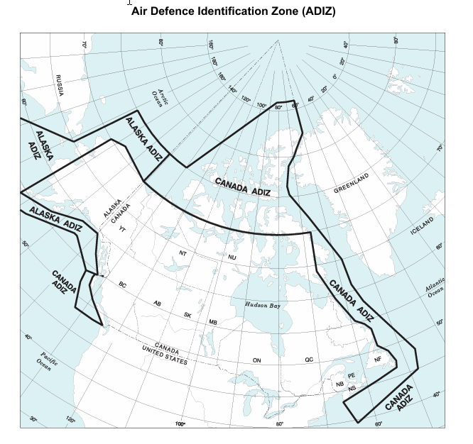
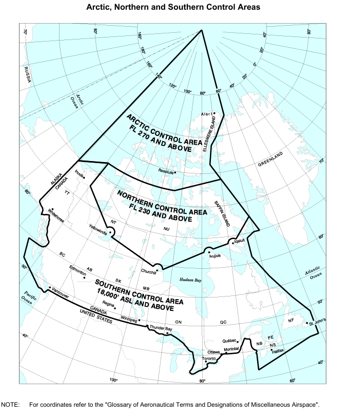
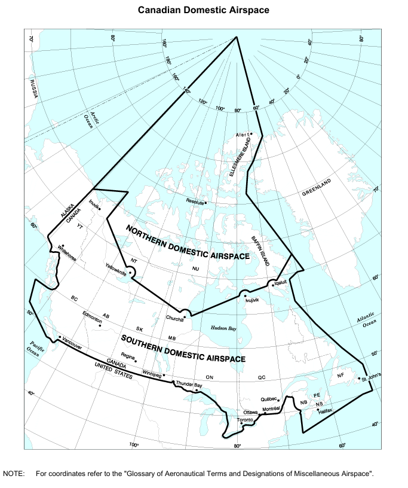
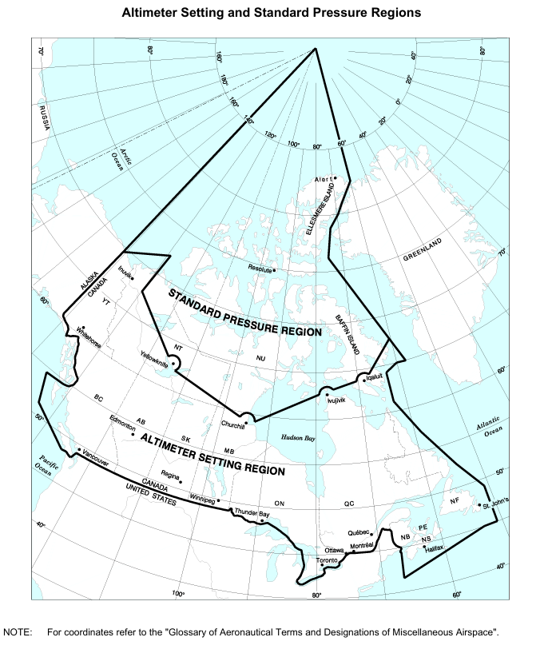
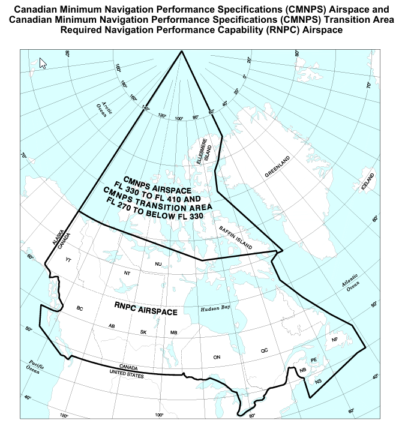

Advance Pilot Knowledge Requirements
Small RPAS pilot knowledge requirements for sRPAS pilots operating VLOS are shown in the following tables.
About these knowledge requirements
The applicable type of operation (basic and advanced) is shown to the left of the topics. Sample learning objectives are shown to the right of the topics. The list of sample objectives is not all-inclusive, its purpose is to illustrate the depth of knowledge required to operate sRPAS in Canadian airspace. Types of operation (basic operations, advanced operations) are set out in the Canadian Aviation Regulations, Part IX. There are minimum knowledge requirements for the pilots of sRPAS operating in each of those groups.
Applicants for the pilot certificate – small remotely piloted aircraft (VLOS) – basic operations shall demonstrate their knowledge by writing the Transport Canada multiple choice examination based on the indicated applicable subjects contained in this guide and covering the subjects set out in Standard 921.01.
Applicants for the pilot certificate – small remotely piloted aircraft (VLOS) – advanced operations shall demonstrate their knowledge by writing the Transport Canada multiple choice examination based on the indicated applicable subjects contained in this guide and covering the subjects set out in Standard 921.02.
Applicants for the flight reviewer rating attached to the pilot certificate – small remotely piloted aircraft (VLOS) – advanced operations shall demonstrate their knowledge by writing the Transport Canada multiple choice examination on the indicated applicable subjects contained in this guide and covering the subjects set out in Standard 921.03.
| Bas | Adv | Knowledge area (topics) | The small RPAS pilot operating within visual line of sight must be able to: | URLs | Notes: |
|---|---|---|---|---|---|
| Bas | Adv | ||||
| Aeronautics Act | Links | ||||
| ✓ | ✓ | s3-Definitions | Define aerodrome, airport, and pilot in command. | Aeronautics Act | Aerodrome means any area of land, water (including the frozen surface thereof) or other supporting surface used, designed, prepared, equipped or set apart for use either in whole or in part for the arrival, departure, movement or servicing of aircraft and includes any buildings, installations and equipment situated thereon or associated therewith; airport means an aerodrome in respect of which a Canadian aviation document is in force; pilot-in-command means, in relation to an aircraft, the pilot having responsibility and authority for the operation and safety of the aircraft during flight time; |
| Canadia Aviation Regulations (CARs) Part I – General provisions |
PART I - General Provisions | ||||
| 101-Interpretation | 101-Interpretation | ||||
| ✓ | ✓ | 101.01 Interpretation (definitions) | 101.01 Interpretation (definitions) | ||
| 102 - Application | 102 - Application | ||||
| ✓ | ✓ | 102.01 Application | State that the regulations do not apply to indoor or underground operations. | 102.01 Application | 102.01 These Regulations do not apply in respect of (a) military aircraft of Her Majesty in right of Canada when they are being manoeuvred under the authority of the Minister of National Defence; (b) military aircraft of a country other than Canada, to the extent that the Minister of National Defence has exempted them from the application of these Regulations pursuant to subsection 5.9(2) of the Act; (b.1) remotely piloted aircraft that are operated indoors or underground; or (c) rockets, hovercraft or wing-in-ground-effect machines, unless otherwise indicated in these Regulations. |
| 103 − Administration and compliance | 103 - Administration and compliance | ||||
| ✓ | ✓ | 103.02 Inspection of aircraft, requests for production of documents and prohibitions | State who may demand to inspect aviation documents. | 103.04 Record keeping | 103.02 (1) The owner or operator of an aircraft shall, on reasonable notice given by the Minister, make the aircraft available for inspection in accordance with the notice. (2) Every person who (a) is the holder of a Canadian aviation document, (b) is the owner, operator or pilot-in-command of an aircraft in respect of which a Canadian aviation document, technical record or other document is kept, or (c) has in possession a Canadian aviation document, technical record or other document relating to an aircraft or a commercial air service shall produce the Canadian aviation document, technical record or other document for inspection in accordance with the terms of a demand made by a peace officer, an immigration officer or the Minister. (3) No person shall (a) lend a Canadian aviation document to any person who is not entitled to it by these Regulations, or allow any such person to use a Canadian aviation document; or (b) mutilate, alter or render illegible a Canadian aviation document. (4) For the purposes of this section, other document includes all writings, papers and other records made, held or maintained by the owner, operator or pilot-in-command of an aircraft for the purpose of recording any action, activity, performance or use of the aircraft or any activity of the owner, operator or crew members in respect of that aircraft, whether or not the documents are required by law to be made, held or maintained. |
| ✓ | 103.03 Return of Canadian Aviation Documents | 103.03 Where a Canadian aviation document has been suspended or cancelled, the person to whom it was issued shall return it to the Minister immediately after the effective date of the suspension or cancellation. | |||
| ✓ | 103.04 Record keeping | State that computer-stored records may be used in place of paper records if measures are taken to protect them. | 103.04 Recording systems, including computer records and microfiche, that do not comprise entries on paper may be used to comply with the record-keeping requirements of these Regulations if (a) measures are taken to ensure that the records contained in the recording systems are protected, by electronic or other means, against inadvertent loss or destruction and against tampering; and (b) a copy of the records contained in the recording systems can be printed on paper and provided to the Minister on reasonable notice given by the Minister. |
||
| Part III – Aerodrome and airports | Part III - Aerodromes, Airports and Heliports | ||||
| 301 – Aerodromes | Explain that persons, vehicles, obstacles and operations at aerodromes are subject to the approval of the aerodrome operator and the appropriate air traffic control unit State the restrictions/rules for activities on an aerodrome, or airport. |
301 - Aerodromes | |||
| ✓ | 301.01 Application | 301.01 Application | 301.01 This Subpart applies in respect of all aerodromes except airports, heliports and military aerodromes. | ||
| ✓ | 301.08 Prohibitions | 301.08 Prohibitions | 301.08 No person shall (a) walk, stand, drive a vehicle, park a vehicle or aircraft or cause an obstruction on the movement area of an aerodrome, except in accordance with permission given (i) by the operator of the aerodrome, and (ii) where applicable, by the appropriate air traffic services unit; (b) tow an aircraft on an active movement area at night unless the aircraft displays operating wingtip, tail and anti-collision lights or is illuminated by lights mounted on the towing vehicle and directed at the aircraft; (c) park or otherwise leave an aircraft on an active manoeuvring area at night unless the aircraft displays operating wingtip, tail and anti-collision lights or is illuminated by lanterns suspended from the wingtips, tail and nose of the aircraft; (d) operate any vessel, or cause any obstruction, on the surface of any part of a water area of an aerodrome that is to be kept clear of obstructions in the interest of aviation safety, when ordered, by signal or otherwise, to leave or not to approach that area by the appropriate air traffic services unit or by the operator of the aerodrome; (e) knowingly remove, deface, extinguish or interfere with a marker, marking, light or signal that is used at an aerodrome for the purpose of air navigation, except in accordance with permission given (i) by the operator of the aerodrome, and (ii) where applicable, by the appropriate air traffic services unit; (f) at a place other than an aerodrome, knowingly display a marker, marking, light or signal that is likely to cause a person to believe that the place is an aerodrome; (g) knowingly display at or in the vicinity of an aerodrome a marker, marking, sign, light or signal that is likely to be hazardous to aviation safety by causing glare or by causing confusion with or preventing clear visual perception of a marker, marking, sign, light or signal that is required under this Subpart; (h) allow a bird or other animal that is owned by the person or that is in the person's custody or control to be unrestrained within the boundaries of an aerodrome except for the purpose of controlling other birds or animals at the aerodrome as permitted by the operator; or (i) discharge a firearm within or into an aerodrome without the permission of the operator of the aerodrome. |
||
| ✓ | 301.09 Fire prevention | 301.09 Fire prevention | 301.09 (1) Subject to subsection 301.07(12) and subsections (2) and (3), no person shall, while at an aerodrome, smoke or display an open flame (a) on an apron; (b) on an aircraft loading bridge or on a gallery or balcony that is contiguous to or that overhangs an apron; or (c) in an area where smoking or the presence of an open flame is likely to create a fire hazard that could endanger persons or property. (2) The operator of an aerodrome may, in writing, authorize maintenance or servicing operations on an apron that involve the use, production or potential development of an open flame or that involve the production or potential development of a spark where the operations are conducted in a manner that is not likely to create a fire hazard that could endanger persons or property. (3) The operator of an aerodrome may permit smoking in an enclosed building or shelter located on an apron where such smoking is not likely to create a fire hazard that could endanger persons or property. |
||
| 302 – Airports | 302 - Airports | ||||
| ✓ | 302.10 Prohibitions | 302.10 Prohibitions | 302.10 No person shall (a) operate an aerodrome referred to in subsection 302.01(1) unless an airport certificate is issued in respect of that aerodrome; (b) knowingly use an airport in a manner contrary to a condition set out in the airport certificate; (c) walk, stand, drive a vehicle, park a vehicle or aircraft or cause an obstruction on the movement area of an airport, except in accordance with permission given (i) by the operator of the airport, and (ii) where applicable, by the appropriate air traffic services unit; (d) operate any vessel, or cause any obstruction, on the surface of any part of a water area of an airport that is to be kept clear of obstructions in the interest of aviation safety, when ordered, by signal or otherwise, to leave or not to approach that area by the appropriate air traffic services unit or by the operator of the airport; (e) tow an aircraft on an active movement area at night unless the aircraft displays operating wingtip, tail and anti-collision lights or is illuminated by lights mounted on the towing vehicle and directed at the aircraft being towed; (f) park or otherwise leave an aircraft on an active manoeuvring area at night unless the aircraft displays operating wingtip, tail and anti-collision lights or is illuminated by lanterns suspended from the wingtips, tail and nose of the aircraft; (g) at an airport, knowingly remove, deface, extinguish or interfere with a marker, marking, light or signal that is used for the purpose of air navigation, except in accordance with permission given (i) by the operator of the airport, and (ii) where applicable, by the appropriate air traffic services unit; (h) at or in the vicinity of an airport, knowingly display a marker, marking, sign, light or signal that is likely to be hazardous to aviation safety by causing glare or by causing confusion with or preventing clear visual perception of a marker, marking, sign, light or signal that is required under this Subpart; (i) allow a bird or other animal that is owned by the person or that is in the person's custody or control to be unrestrained within the boundaries of an airport, except for the purpose of controlling other birds or animals at the airport as permitted by the operator; or (j) discharge a firearm within or into an airport without the permission of the operator of the airport. |
||
| ✓ | 302.11 Fire prevention | 302.11 Fire prevention | 302.11 (1) Subject to subsections (2) to (4), no person shall, at an airport, smoke or display an open flame (a) on an apron; (b) on an aircraft loading bridge or on a gallery or balcony that is contiguous to or that overhangs an apron; or (c) in an area where smoking or an open flame is likely to create a fire hazard that could endanger persons or property. (2) The operator of an airport may display flare pots to provide temporary lighting for the take-off or landing of aircraft. (3) The operator of an airport may, in writing, authorize maintenance or servicing operations on an apron that involve the use, production or potential development of an open flame or that involve the production or potential development of a spark where the operations are conducted in a manner that is not likely to create a fire hazard that could endanger persons or property. (4) The operator of an airport may permit smoking in an enclosed building or shelter located on an apron where such smoking is not likely to create a fire hazard that could endanger persons or property. |
||
| Part VI – General operating and flight rules | Part VI - General Operating and Flight Rules | Airspace structure, classification and use | |||
| 601 - Airspace | 601 - Airspace | Refer to the Designated Airspace Handbook for designated airspace dimensions, classes, and controlling/user agency information. | |||
| ✓ | 601.01 Airspace structure | Describe the horizontal and vertical limits of the various classifications of airspace, control areas, special use airspace. Identify the altimeter setting region and the standard pressure region. Recall that advanced operations in Class F airspace require the permission of the airspace operator. Describe the communications required with air traffic control (ATC) for operating a small RPA VLOS within class C or D airspace. |
601.01 Airspace structure | 601.01 (1) Controlled airspace consists of the following types of airspace: (a) the Arctic Control Area, Northern Control Area and Southern Control Area; (b) high level airspace; (c) high level airways; (d) low level airspace; (e) low level airways; (f) fixed RNAV routes; (g) terminal control areas; (h) military terminal control areas; (i) control area extensions; (j) transition areas; (k) control zones; (l) restricted airspace; (m) advisory airspace; (n) military operations areas; and (o) danger areas. (2) Uncontrolled airspace consists of the following types of airspace: (a) high level airspace; (b) low level airspace; (c) high level air routes; (d) low level air routes; (e) fixed RNAV routes; (f) restricted airspace; (g) advisory airspace; (h) military operations areas; and (i) danger areas. (3) The horizontal and vertical limits of any type of airspace referred to in subsection (1) or (2) are (a) in the case of a high level air route, a low level air route and an uncontrolled fixed RNAV route, those specified on an aeronautical chart; or (b) in any other case, those specified in the Designated Airspace Handbook. (4) The geographical location and the horizontal and vertical limits of the following items are those specified in the Designated Airspace Handbook: (a) Canadian Domestic Airspace; (b) Canadian minimum navigation performance specifications (CMNPS) airspace; (c) the CMNPS transition area; (d) reduced vertical separation minimum (RVSM) airspace; (e) required navigation performance capability (RNPC) airspace; (f) transponder airspace; (g) the air defence identification zone (ADIZ); (h) flight information regions (FIR); (j) standard pressure regions; (i) altimeter setting regions; (k) mountainous regions; and (l) any other areas, zones, regions and points.; |
|
| ✓ | 601.02 Airspace classification | 601.02 Airspace classification | 601.02 (1) The class of any controlled airspace of a type referred to in subsection 601.01(1) is one of the following, as specified in the Designated Airspace Handbook: (a) Class A; (b) Class B; (c) Class C; (d) Class D; (e) Class E; (f) Class F Special Use Restricted; or (g) Class F Special Use Advisory. (2) The class of any uncontrolled airspace of a type referred to in subsection 601.01(2) is one of the following, as specified in the Designated Airspace Handbook: (a) Class G; (b) Class F Special Use Restricted; or (c) Class F Special Use Advisory. |
||
| ✓ | 601.03 Transponder airspace | 601.03 Transponder airspace | 601.03 Transponder airspace consists of (a) all Class A, B and C airspace as specified in the Designated Airspace Handbook; and (b) any Class D or E airspace specified as transponder airspace in the Designated Airspace Handbook. |
||
| ✓ | 601.04 IFR or VFR Flight in class F special use restricted airspace or class F special use advisory airspace | 601.04 IFR or VFR Flight in class F special use restricted airspace or class F special use advisory airspace | 601.04 (1) The procedures for the operation of aircraft in Class F Special Use Restricted airspace and Class F Special Use Advisory airspace are those specified in the Designated Airspace Handbook. (2) No person shall operate an aircraft in Class F Special Use Restricted airspace unless authorized to do so by the person specified for that purpose in the Designated Airspace Handbook. (3) For the purposes of subsection (2), a person specified in the Designated Airspace Handbook may authorize the operation of an aircraft where activities on the ground or in the airspace are not hazardous to aircraft operating in that airspace and access by aircraft to that airspace does not jeopardize national security interests. |
||
| ✓ | 601.08 VFR flight in class C airspace | 601.08 VFR flight in class C airspace | 601.08 (1) Subject to subsection (2), no person operating a VFR aircraft shall enter Class C airspace unless the person receives a clearance to enter from the appropriate air traffic control unit before entering the airspace. (2) The pilot-in-command of a VFR aircraft that is not equipped with radiocommunication equipment capable of two-way communication with the appropriate air traffic control unit may, during daylight in VMC, enter Class C airspace if the pilot-in-command receives authorization to enter from the appropriate air traffic control unit before entering the airspace. (3) Class C airspace becomes Class E airspace when the appropriate air traffic control unit is not in operation. |
||
| ✓ | 601.09 VFR flight in class D airspace | 601.09 VFR flight in class D airspace | 601.09 (1) Subject to subsection (2), no person operating a VFR aircraft shall enter Class D airspace unless the person establishes two-way radio contact with the appropriate air traffic control unit before entering the airspace. (2) The pilot-in-command of a VFR aircraft that is not equipped with radiocommunication equipment capable of two-way communication with the appropriate air traffic control unit may, during daylight in VMC, enter Class D airspace if the pilot-in-command receives authorization to enter from the appropriate air traffic control unit before entering the airspace. (3) Class D airspace becomes Class E airspace when the appropriate air traffic control unit is not in operation. |
||
| Aircraft operating restrictions and hazards to aviation safety | Recall the restrictions to operations in the vicinity of forest fire areas. Describe the circumstances when a small RPAS is permitted to be operated in the vicinity of a forest fire. Describe the process required to legally use a LIDAR (light detection and ranging) on a small RPA. | ||||
| ✓ | ✓ | 601.14 Interpretation | 601.14 Interpretation | 601.14 In this Division, directed bright light source means any directed light source (coherent or non-coherent), including lasers, that may create a hazard to aviation safety or cause damage to an aircraft or injury to persons on board the aircraft; ( source lumineuse dirigée de forte intensité ) fire control authority means an official of a government forestry service or other fire control agency that is responsible for the protection of persons and property against fire; ( responsable de la lutte contre l'incendie ) forest fire area means an area on the surface of the earth on which standing timber, grass or any other vegetation or buildings are burning. ( zone d'incendie de forêt ) | |
| ✓ | ✓ | 601.15 Forest fire aircraft operating restrictions | 601.15 Forest fire aircraft operating restrictions | 601.15 No person shall operate an aircraft (a) over a forest fire area, or over any area that is located within five nautical miles of a forest fire area, at an altitude of less than 3,000 feet AGL; or (b) in any airspace that is described in a NOTAM issued pursuant to section 601.16. |
|
| ✓ | 601.16 Issuance of NOTAM for forest fire | 601.16 Issuance of NOTAM for forest fire | 601.16 The Minister may issue a NOTAM that relates to restrictions on the operation of aircraft in the case of a forest fire and that describes (a) the location and dimensions of the forest fire area; and (b) the airspace in which forest fire control operations are being conducted. |
||
| ✓ | ✓ | 601.17 Exceptions | 601.17 Exceptions | 601.17 (1) Section 601.15 does not apply to (a) persons who are operating an aircraft at the request of, or with the authorization of, an appropriate fire control authority for the purpose of assisting the fire control authority in the conduct of its operations; (b) persons who are operating an aircraft with the authorization of the Minister issued under subsection (2); or (c) Department of Transport personnel who are operating an aircraft in the performance of duties related to surveillance and the enforcement of aviation legislation. (2) On receipt of an application in writing, the Minister shall issue a written authorization permitting the applicant to operate an aircraft if the Minister is of the opinion that operating the aircraft is necessary for the safety of the public or to support the operation of an aerodrome that is in or adjacent to the forest fire area. (3) The Minister may specify conditions in the authorization governing the operation of the aircraft as are necessary for its safe and proper operation. (4) No person shall operate an aircraft under the authorization unless the authorization is on board and the aircraft is operated in accordance with any conditions specified in the authorization. |
|
| ✓ | ✓ | 601.20 Projection of directed bright light source at an Aircraft | 601.20 Projection of directed bright light source at an Aircraft | 601.20 Subject to section 601.21, no person shall project or cause to be projected a directed bright light source into navigable airspace in such a manner as to create a hazard to aviation safety or cause damage to an aircraft or injury to persons on board the aircraft. | |
| ✓ | ✓ | 601.21 Requirement for notification | 601.21 Requirement for notification | 601.21 (1) Any person planning to project or cause to be projected a directed bright light source into navigable airspace shall, before the projection, (a) submit a written request to the Minister for an authorization to project the directed bright light source into navigable airspace; and (b) obtain a written authorization from the Minister to do so. (2) On receipt of the request for authorization, the Minister shall issue a written authorization if the projection is not likely to create a hazard to aviation safety or to cause damage to an aircraft or injury to persons on board the aircraft. (3) The Minister may specify in the authorization any conditions necessary to ensure that the projection is not likely to create a hazard to aviation safety or to cause damage to an aircraft or injury to persons on board the aircraft.; |
|
| ✓ | ✓ | 601.22 Requirement for pilot-in-command | 601.22 Requirement for pilot-in-command | 601.22 (1) No pilot-in-command shall intentionally operate an aircraft into a beam from a directed bright light source or into an area where a directed bright light source is projected, unless the aircraft is operated in accordance with an authorization issued by the Minister. (2) The Minister may issue the authorization if the operation of the aircraft is not likely to create a hazard to aviation safety. |
|
| 602 − Operating and flight rules - general | Subpart 2 - Operating and Flight Rules | ||||
| Operation at or in the vicinity of an aerodrome | |||||
| ✓ | 602.96 General | State that pilots of small RPAs shall avoid flying the RPA in the traffic pattern at an aerodrome. Recall the minimum operating conditions for VFR flight in uncontrolled airspace. |
602.96 General | 602.96 (1) This section applies to persons operating VFR or IFR aircraft at or in the vicinity of an uncontrolled or controlled aerodrome. (2) Before taking off from, landing at or otherwise operating an aircraft at an aerodrome, the pilot-in-command of the aircraft shall be satisfied that (a) there is no likelihood of collision with another aircraft or a vehicle; and (b) the aerodrome is suitable for the intended operation. (3) The pilot-in-command of an aircraft operating at or in the vicinity of an aerodrome shall (a) observe aerodrome traffic for the purpose of avoiding a collision; (b) conform to or avoid the pattern of traffic formed by other aircraft in operation; (c) make all turns to the left when operating within the aerodrome traffic circuit, except where right turns are specified by the Minister in the Canada Flight Supplement or where otherwise authorized by the appropriate air traffic control unit; (d) if the aerodrome is an airport or heliport, comply with any airport or heliport operating restrictions specified by the Minister in the Canada Flight Supplement or in a NOTAM; (e) where practicable, land and take off into the wind unless otherwise authorized by the appropriate air traffic control unit; (f) maintain a continuous listening watch on the appropriate frequency for aerodrome control communications or, if this is not possible and an air traffic control unit is in operation at the aerodrome, keep a watch for such instructions as may be issued by visual means by the air traffic control unit; and (g) where the aerodrome is a controlled aerodrome, obtain from the appropriate air traffic control unit, either by radio communication or by visual signal, clearance to taxi, take off from or land at the aerodrome. (4) Unless otherwise authorized by the appropriate air traffic control unit, no pilot-in-command shall operate an aircraft at an altitude of less than 2,000 feet over an aerodrome except for the purpose of landing or taking off or if the aircraft is operated pursuant to subsection (5). (5) Where it is necessary for the purposes of the operation in which the aircraft is engaged, a pilot-in-command may operate an aircraft at an altitude of less than 2,000 feet over an aerodrome, where it is being operated (a) in the service of a police authority; (b) for the purpose of saving human life; (c) for fire-fighting or air ambulance operations; (d) for the purpose of the administration of the Fisheries Act or the Coastal Fisheries Protection Act; (e) for the purpose of the administration of the national or provincial parks; (f) for the purpose of flight inspection; (g) for the purpose of aerial application or aerial inspection; (h) for the purpose of highway or city traffic patrol; (i) for the purpose of aerial photography conducted by the holder of an air operator certificate; (j) for the purpose of helicopter external load operations; or (k) for the purpose of flight training conducted by the holder of a flight training unit operator certificate. (6) No person shall conduct a take-off or landing at a designated airport without an aircraft fire-fighting service in an aeroplane in respect of which a type certificate has been issued authorizing the transport of 20 or more passengers if the aeroplane is operated under (a) Part VI, Subpart 4; or (b) Part VII, Subpart 1 or 5. (7) Subsection (6) does not apply in respect of (a) a cargo flight without passengers; (b) a ferry flight; (c) a positioning flight; (d) a training flight if no fare-paying passengers are on board; (e) the arrival of an aeroplane when the airport is being used for a diversion or as an alternate aerodrome; or (f) the subsequent departure of an aeroplane referred to in paragraph (e) if (i) the air operator or private operator has notified the operator of the designated airport of the intended time of departure, (ii) the operator of the designated airport has advised the air operator or private operator that aircraft fire-fighting services cannot be made available within one hour after the later of the time that notification was given under subparagraph (i) and the time of landing, and (iii) the pilot-in-command and the operations manager of the air operator or private operator have agreed that the aeroplane will depart without aircraft fire-fighting services being available. |
|
| ✓ | 602.97 VFR and IFR aircraft operations at uncontrolled aerodromes within a mandatory frequency (MF) Area | 602.97 VFR and IFR aircraft operations at uncontrolled aerodromes within a mandatory frequency (MF) Area | 602.97 (1) Subject to subsection (3), no pilot-in-command shall operate a VFR or IFR aircraft within an MF area unless the aircraft is equipped with radiocommunication equipment pursuant to Subpart 5. (2) The pilot-in-command of a VFR or IFR aircraft operating within an MF area shall maintain a listening watch on the mandatory frequency specified for use in the MF area. (3) The pilot-in-command of a VFR aircraft that is not equipped with the radiocommunication equipment referred to in subsection (1) may operate the aircraft to or from an uncontrolled aerodrome that lies within an MF area if (a) a ground station is in operation at the aerodrome; (b) prior notice of the pilot-in-command's intention to operate the aircraft at the aerodrome has been given to the ground station; (c) when conducting a take-off, the pilot-in-command ascertains by visual observation that there is no likelihood of collision with another aircraft or a vehicle during take-off; and (d) when approaching for a landing, the aircraft enters the aerodrome traffic circuit from a position that will require it to complete two sides of a rectangular circuit before turning onto the final approach path. |
||
| ✓ | 602.98 General MF reporting requirements | 602.98 General MF reporting requirements | 602.98 (1) Every report made pursuant to this Division shall be made on the mandatory frequency that has been specified for use in the applicable MF area. (2) Every report referred to in subsection (1) shall be (a) directed to the ground station associated with the MF area, if a ground station exists and is in operation; or (b) broadcast, if a ground station does not exist or is not in operation. |
||
| ✓ | 602.99 MF reporting procedures before entering manoeuvring area | 602.99 MF reporting procedures before entering manoeuvring area | 602.99 The pilot-in-command of a VFR or IFR aircraft that is operated at an uncontrolled aerodrome that lies within an MF area shall report the pilot-in-command's intentions before entering the manoeuvring area of the aerodrome. | ||
| ✓ | 602.100 MF reporting procedures on departure | 602.100 MF reporting procedures on departure | 602.100 The pilot-in-command of a VFR or IFR aircraft that is departing from an uncontrolled aerodrome that lies within an MF area shall (a) before moving onto the take-off surface, report the pilot-in-command's departure procedure intentions; (b) before take-off, ascertain by radiocommunication and by visual observation that there is no likelihood of collision with another aircraft or a vehicle during take-off; and (c) after take-off, report departing from the aerodrome traffic circuit. |
||
| ✓ | 602.101 MF reporting procedures on arrival | 602.101 MF reporting procedures on arrival | 602.101 The pilot-in-command of a VFR aircraft arriving at an uncontrolled aerodrome that lies within an MF area shall report (a) before entering the MF area and, where circumstances permit, shall do so at least five minutes before entering the area, giving the aircraft's position, altitude and estimated time of landing and the pilot-in-command's arrival procedure intentions; (b) when joining the aerodrome traffic circuit, giving the aircraft's position in the circuit; (c) when on the downwind leg, if applicable; (d) when on final approach; and (e) when clear of the surface on which the aircraft has landed. |
||
| ✓ | 602.102 MF reporting procedures when flying continuous circuits | 602.102 MF reporting procedures when flying continuous circuits | 602.102 The pilot-in-command of a VFR aircraft carrying out continuous circuits at an uncontrolled aerodrome that lies within an MF area shall report (a) when joining the downwind leg of the circuit; (b) when on final approach, stating the pilot-in-command's intentions; and (c) when clear of the surface on which the aircraft has landed. |
||
| ✓ | 602.103 Reporting procedures when flying through an MF area | 602.103 Reporting procedures when flying through an MF area | 602.103 The pilot-in-command of an aircraft flying through an MF area shall report (a) before entering the MF area and, where circumstances permit, shall do so at least five minutes before entering the area, giving the aircraft's position and altitude and the pilot-in-command's intentions; and (b) when clear of the MF area. |
||
| Radio Communications | Describe the actions to be taken in the event of a two-way radio communication failure when flying in class C or D airspace. Recall that weapons may not be carried on RPAS unless authorized. |
||||
| ✓ | 602.136 Continuous listening watch | 602.136 Continuous listening watch | 602.136 Subject to sections 602.137 and 602.138, where an aircraft is equipped with radiocommunication equipment, the pilot-in-command shall ensure that (a) a listening watch is maintained on the appropriate frequency; and (b) where communications are required, communication is established with an air traffic services unit or community aerodrome radio station, as applicable, on that appropriate frequency. |
||
| ✓ | 602.138 Two-way radio communication failure in VFR flight | 602.138 Two-way radio communication failure in VFR flight | 602.138 Where there is a two-way radiocommunication failure between the controlling air traffic control unit and a VFR aircraft while operating in Class B, Class C or Class D airspace, the pilot-in-command shall (a) leave the airspace (i) where the airspace is a control zone, by landing at the aerodrome for which the control zone is established, and (ii) in any other case, by the shortest route; (b) where the aircraft is equipped with a transponder, set the transponder to code 7600; and (c) inform an air traffic control unit as soon as possible of the actions taken pursuant to paragraph (a). |
||
| ✓ | 602.146 ESCAT Plan | 602.146 ESCAT Plan | 602.146 (1) This section applies in respect of aircraft before entering into and while operating within Canadian domestic airspace or the ADIZ. (2) The pilot-in-command of an aircraft referred to in subsection (1) who is notified by an air traffic control unit of the implementation of the ESCAT Plan shall (a) before take-off, obtain approval for the flight from the appropriate air traffic services unit; (b) comply with any instruction to land or to change course or altitude that is received from the appropriate air traffic services unit; and (c) provide the appropriate air traffic services unit with position reports (i) when operating within controlled airspace, as required pursuant to section 602.125, and (ii) when operating outside controlled airspace, at least every 30 minutes. |
||
| 606−Miscellaneous | 606-Miscellaneous | Munitions of war, Liability Insurance, Synthetic Flight Training equipment | |||
| ✓ | ✓ | 606.01 Munitions of war | 606.01 Munitions of war | 606.01 No person shall carry weapons, ammunition or other equipment designed for use in war on board an aircraft unless the aircraft is a Canadian aircraft or the Minister has authorized the carriage of such equipment. | |
| Part IX Remotely piloted aircraft systems | Part IX - Remotely Piloted Aircraft Systems | ||||
| Division I General Provisions | Division I - General Provisions | ||||
| ✓ | ✓ | 900.01 | Define common terms used in RPAS operations such as: payload, visual observer, visual line of sight (VLOS) operations, sheltered operation, extended visual line of sight (EVLOS) operations, operating weight, small remotely piloted aircraft, medium remotely piloted aircraft, etc. | 900.01 | 900.01 The following definitions apply in this Part. advertised event means an outdoor event that is advertised to the general public, including a concert, festival, market or sporting event. ( événement annoncé ) autonomous [Repealed, ] BVLOS means beyond visual line-of-sight. ( BVLOS ) BVLOS operation means an operation of a remotely piloted aircraft that is not in visual line-of-sight, but does not include an extended VLOS operation or a sheltered operation. ( opération en BVLOS ) command and control link [Repealed, ] contingency procedures means the procedures to be followed to address conditions that could lead to an unsafe situation. ( procédure de contingence ) contingency volume means the area immediately surrounding the flight geography within which contingency procedures are intended to be used to return a remotely piloted aircraft to the flight geography or safely terminate the flight. ( volume de contingence ) control station [Repealed, ] detect and avoid functions [Repealed, ] extended VLOS operation means an operation of a remotely piloted aircraft that is not in visual line-of-sight but during which unaided visual contact is maintained with the airspace in which the aircraft is operating in a manner sufficient to detect conflicting air traffic and other hazards and take action to avoid them. ( opération en VLOS prolongée ) first-person view device [Repealed, ] flight geography means the area within which a remotely piloted aircraft is intended to fly for a specific operation. ( géographie de vol ) flight termination system [Repealed, ] fly-away means, in respect of a remotely piloted aircraft, an interruption or loss of the command and control link such that the pilot is no longer able to control the aircraft and the aircraft no longer follows its preprogrammed procedures or operates in a predictable or planned manner. ( dérive ) ground risk buffer means the area immediately surrounding the contingency volume that, when measured horizontally from the perimeter of the contingency volume, is at least equal to the planned maximum altitude of the remotely piloted aircraft for the flight. ( tampon de risque au sol ) mandatory action means the inspection, repair or modification of a remotely piloted aircraft system that is necessary to prevent an unsafe or potentially unsafe condition. ( mesure obligatoire ) medium remotely piloted aircraft means a remotely piloted aircraft that has an operating weight of more than 25 kg (55 pounds) but not more than 150 kg (331 pounds). ( aéronef télépiloté moyen ) operating weight means the weight of a remotely piloted aircraft at any point during a flight, including any payload and any safety equipment that is on board or otherwise connected to the aircraft. ( masse opérationnelle ) operational volume means the area that is composed of the flight geography, contingency volume and ground risk buffer. ( volume opérationnel ) payload means a system, object or collection of objects, including a slung load, that is on board or is otherwise connected to a remotely piloted aircraft but that is not required for flight. ( charge utile ) populated area means an area with more than five people per square kilometre. ( zone peuplée ) RPAS ground school instruction means instructor-led training given to one or more persons, delivered in-person or virtually, and provided through an organized program of lectures, homework or self-paced study. ( instruction théorique au sol pour les SATP ) RPAS operations manual means the manual established by an RPAS operator under section 901.217. ( manuel d'exploitation de SATP ) RPAS operator means the holder of an RPAS operator certificate. ( exploitant de SATP ) RPAS operator certificate means a certificate issued under section 901.214. ( certificat d'exploitation de SATP ) sheltered operation means an operation of a remotely piloted aircraft that is not in visual line-of-sight and during which the aircraft remains at a distance of less than 200 feet (61 m), measured horizontally, from a building or structure and at an altitude no greater than 100 feet (30 m) above that building or structure. ( opération protégée ) small remotely piloted aircraft means a remotely piloted aircraft that has an operating weight of at least 250 g (0.55 pounds) but not more than 25 kg (55 pounds). ( petit aéronef télépiloté ) sparsely populated area means an area with more than 5 but not more than 25 people per square kilometre. ( zone peu densément peuplée ) Standard 922 means Standard 922 - RPAS Safety Assurance, published by the Department of Transport. ( norme 922 ) visual line-of-sight or VLOS means unaided visual contact maintained with a remotely piloted aircraft in a manner sufficient to maintain control of the aircraft, know its location and scan the airspace in which it is operating in order to detect conflicting air traffic and other hazards and take action to avoid them. ( visibilité directe ou VLOS ) visual observer means a crew member who is trained to assist the pilot in ensuring the safe conduct of a flight. ( observateur visuel ) VLOS operation means an operation of a remotely piloted aircraft in visual line-of-sight. ( opération en VLOS ) Water Aerodrome Supplement has the same meaning as in section 300.01. ( Supplément hydroaérodromes ) |
| ✓ | ✓ | 900.02 Application | 900.02 Application | 900.02 This Part applies in respect of the operation of remotely piloted aircraft systems. | |
| 900.03 Reserved | 900.03 [Reserved] | ||||
| Division II General operating and flight rules for all RPAS | Division II - General Operating and Flight Rules | ||||
| ✓ | ✓ | 900.06 Reckless or negligent operation | Recall that these provisions apply to RPA of any size, including those with operating weight of less than 250 g. Recall the prohibition against endangering aviation safety or the safety of any person. Recall notification requirements when a loss of control of an RPA has occurred or is likely to occur. Recall prohibitions related to operations over or within emergency security perimeters. Recall prohibitions related to commercial air |
900.06 Reckless or negligent operation | 900.06 No person shall operate a remotely piloted aircraft system in such a reckless or negligent manner as to endanger or be likely to endanger aviation safety or the safety of any person. |
| ✓ | ✓ | 900.07 Inadvertent Entry into Restricted Airspace | 900.07 Inadvertent Entry into Restricted Airspace | 900.07 A person who operates a remotely piloted aircraft shall ensure that the appropriate ATS unit or user agency is notified immediately any time the aircraft is no longer under the person's control and inadvertently enters or is likely to enter into Class F Special Use Restricted airspace, as specified in the Designated Airspace Handbook. | |
| ✓ | ✓ | 900.08 Prohibition – Emergency Security Perimeter | 900.08 Prohibition - Emergency Security Perimeter | 900.08 (1) No person shall operate a remotely piloted aircraft over or within the security perimeter established by a public authority in response to an emergency. (2) Subsection (1) does not apply to the operation of a remotely piloted aircraft for the purpose of an operation to save human life, a police operation, a fire-fighting operation or any other operation that is conducted in the service of a public authority. |
|
| ✓ | ✓ | 900.09 Prohibition – Commercial Air Service | 900.09 Prohibition - Commercial Air Service | 900.09 (1) Subject to subsections (2) and (3), no person shall operate a remotely piloted aircraft having an operating weight of 250 g (0.55 pounds) or more to provide a commercial air service unless that person is Canadian or an employee, an agent or mandatary or a representative of an RPAS operator. (2) A person who does not meet the criteria referred to in subsection (1) may operate a remotely piloted aircraft to provide a specialty air service if (a) they are a citizen, permanent resident or corporation of a foreign state with which Canada has entered into a free trade agreement that Canada has implemented and under which the operation is authorized; and (b) the operation is conducted in accordance with a special flight operations certificate - RPAS issued under section 903.03. (3) A person that does not meet the criteria referred to in subsection (1) may operate a remotely piloted aircraft to provide an air transport service if the person holds a licence issued under section 61 of the Canada Transportation Act. |
|
| 900.10 Reserved | |||||
| Division III Registration of remotely piloted aircraft | Division III - Registration of Remotely Piloted Aircraft | ||||
| ✓ | ✓ | 900.13 Registration | 900.13 Registration | 900.13 (1) Subject to subsection (2), no person shall operate a remotely piloted aircraft system that includes a remotely piloted aircraft having an operating weight of 250 g (0.55 pounds) or more unless the remotely piloted aircraft is registered in accordance with this Division. (2) A person may operate a remotely piloted aircraft system that includes a remotely piloted aircraft that is not registered in accordance with this Division if the operation is conducted in accordance with a special flight operations certificate - RPAS issued under section 903.03. |
|
| ✓ | ✓ | 900.14 Registration number | 900.14 Registration number | 900.14 No pilot shall operate a remotely piloted aircraft system unless the registration number referred to in paragraph 900.16 (3) (a) is clearly visible on the remotely piloted aircraft. | |
| ✓ | ✓ | 900.15 Qualifications to be registered owner of a remotely piloted aircraft |
900.15 Qualifications to be registered owner of a remotely | 900.15 (1) Subject to subsection (2), a person is qualified to be the registered owner of a remotely piloted aircraft if they are (a) a Canadian citizen or permanent resident of Canada; (b) a corporation or entity that is incorporated or formed under the laws of Canada or a province; or (c) a government in Canada or an agent or mandatary of such a government. (2) No individual is qualified to be the registered owner of a remotely piloted aircraft unless that individual is at least 14 years of age. |
|
| ✓ | ✓ | 900.16 Registration requirements | 900.16 Registration requirements | 900.16 (1) The Minister shall, on receipt of an application, register a remotely piloted aircraft if the applicant is qualified to be the registered owner of the aircraft. (2) The application shall include the following information: (a) if the applicant is an individual, (i) the applicant's name and address, (ii) the applicant's date of birth, and (iii) an indication as to whether the applicant is a Canadian citizen or permanent resident of Canada; (b) if the applicant is a corporation or entity that is incorporated or formed under the laws of Canada or a province, (i) the corporation's or entity's legal name and address, (ii) the name and title of the person making the application, and (iii) the business number assigned to the corporation or entity by the Minister of National Revenue, if any; (c) if the applicant is His Majesty in right of Canada or a province, (i) the name of the government body, and (ii) the name and title of the person making the application; (d) an indication as to whether the aircraft was purchased or built by the applicant; (e) the date of purchase of the aircraft by the applicant, if applicable; (f) the manufacturer and model of the aircraft, if applicable; (g) the serial number of the aircraft, if applicable; (h) the category of aircraft, such as a fixed-wing aircraft, rotary-wing aircraft, hybrid aircraft or lighter-than-air aircraft; and (i) any Canadian registration number previously issued in respect of the aircraft. (3) On registering the remotely piloted aircraft, the Minister shall issue to the registered owner of the aircraft a certificate of registration that includes (a) a registration number; (b) the name and address of the registered owner; and (c) the serial number of the aircraft, if applicable. |
|
| ✓ | ✓ | 900.17 Register of remotely piloted aircraft | 900.17 Register of remotely piloted aircraft | 900.17 The Minister shall establish and maintain a register of remotely piloted aircraft in which there shall be entered, in respect of each aircraft for which a certificate of registration has been issued under section 900.16, (a) the name and address of the registered owner; (b) the registration number referred to in paragraph 900.16 (3)(a); and (c) any other particulars concerning the aircraft that the Minister determines necessary for the registration of the remotely piloted aircraft. |
|
| ✓ | ✓ | 900.18 Cancellation of certificate of registration | 900.18 Cancellation of certificate of registration | 900.18 (1) A registered owner of a remotely piloted aircraft shall, within seven days after becoming aware that any of the following events has occurred, notify the Minister that (a) the aircraft is destroyed; (b) the aircraft is permanently withdrawn from use; (c) the aircraft is missing and the search for the aircraft is terminated; (d) the aircraft has been missing for 60 days or more; or (e) the registered owner has transferred legal custody and control of the aircraft. (2) When an event referred to in subsection (1) has occurred, the certificate of registration in respect of the remotely piloted aircraft is cancelled. (3) The certificate of registration of a remotely piloted aircraft is cancelled when (a) the registered owner of the aircraft dies; (b) the entity that is the registered owner of the aircraft is wound up, dissolved or amalgamated with another entity; or (c) the registered owner of the aircraft ceases to be qualified to be a registered owner under section 900.15. (4) For the purposes of this Division, an owner has legal custody and control of a remotely piloted aircraft when the owner has complete responsibility for the operation and maintenance of the remotely piloted aircraft system of which the aircraft is an element. |
|
| ✓ | ✓ | 900.19 Change of name or address | 900.19 Change of name or address | 900.19 The registered owner of a remotely piloted aircraft shall notify the Minister of any change in the name or address of the registered owner by not later than seven days after the change. | |
| ✓ | ✓ | 900.20 Access to certificate of registration | 900.20 Access to certificate of registration | 900.20 No pilot shall operate a remotely piloted aircraft system unless the certificate of registration issued in respect of the remotely piloted aircraft that is an element of the system is easily accessible to the pilot for the duration of the operation. | |
| Subpart 1 Small remotely piloted aircraft and medium remotely piloted aircraft |
|||||
| Division I General provisions | Division I - General Provisions | ||||
| ✓ | ✓ | 901.01 Application | • State that RPA having an operating weight less than 250 g are not subject to the rules in Part IX Subpart 1 of the Canadian Aviation Regulations. |
901.01 Application | 901.01 This Subpart applies in respect of the operation of remotely piloted aircraft systems that include a small remotely piloted aircraft or a medium remotely piloted aircraft. |
| ✓ | ✓ | 901.11 Visual line-of-sight | • Recall that RPA shall give way to traditional aircraft at all times. • Recall the rules regarding the use of visual observers. • State what aeronautical information must be consulted before flight. • State that an RPA must remain in Canadian domestic airspace unless the operation is conducted in accordance with an SFOC - RPAS. • Recall the requirement to notify air traffic control if a flyaway is likely to enter controlled airspace. • State which procedures must be established for normal and emergency operations for all RPA operations. • State the minimum distance that an RPA must remain from another person not involved in the operation. • State the minimum visibility required for the operation of an RPA. • Recall that an RPA may not be operated at or near an aerodrome in a manner that could interfere with aircraft operating in the |
901.11 Visual line-of-sight | 901.11 (1) Subject to subsection (2), no pilot shall operate a remotely piloted aircraft system unless the pilot or a visual observer has the aircraft in visual line-of-sight. (2) A pilot may operate a remotely piloted aircraft system without the pilot or a visual observer having the aircraft in visual line-of-sight if the operation is one referred to in paragraph 901.62(b) or (c) that is conducted in accordance with Division V or is an operation referred to in section 901.87 that is conducted in accordance with Division VI or if the operation is conducted in accordance with a special flight operations certificate - RPAS issued under section 903.03. |
| ✓ | ✓ | 901.12 Reserved | 901.12 Reserved | 901.12 [Reserved] | |
| ✓ | ✓ | 901.13 Prohibition-Canadian domestic airspace | 901.13 Prohibition-Canadian domestic airspace | 901.13 (1) Subject to subsection (2), no pilot operating a remotely piloted aircraft shall cause the aircraft to leave Canadian Domestic Airspace. (2) A pilot may operate a remotely piloted aircraft outside of Canadian Domestic Airspace if the operation is conducted in accordance with a special flight operations certificate - RPAS issued under section 903.03. |
|
| ✓ | ✓ | 901.14 Controlled airspace | 901.14 Controlled airspace | 901.14 No pilot shall operate a remotely piloted aircraft in controlled airspace except in accordance with (a) subsection 901.71 (1), in the case of an operation conducted under Division V; and (b) a special flight operations certificate - RPAS issued under section 903.03, in any other case. |
|
| ✓ | ✓ | 901.15 Inadvertent entry into controlled airspace | 901.15 Inadvertent entry into controlled airspace | 901.15 A pilot of a remotely piloted aircraft shall ensure that the appropriate ATS unit or user agency is notified immediately any time the aircraft is no longer under the pilot's control and inadvertently enters or is likely to enter into controlled airspace. | |
| ✓ | ✓ | 901.16 Flight safety | 901.16 Flight safety | 901.16 A pilot that operates a remotely piloted aircraft system shall immediately cease operations if aviation safety or the safety of any person is endangered or likely to be endangered. | |
| ✓ | ✓ | 901.17 Right of way | 901.17 Right of way | 901.17 A pilot of a remotely piloted aircraft shall give way to power-driven heavier-than-air aircraft, airships, gliders and balloons at all times. | |
| ✓ | ✓ | 901.18 Avoidance of collision | 901.18 Avoidance of collision | 901.18 No pilot shall operate a remotely piloted aircraft in such proximity to another aircraft as to create a risk of collision. | |
| ✓ | ✓ | 901.19 Fitness of crew members | 901.19 Fitness of crew members | 901.19 (1) No person shall act as a crew member of a remotely piloted aircraft system if the person (a) is suffering or is likely to suffer from fatigue; or (b) is otherwise unfit to perform properly the person's duties. (2) No person shall act as a crew member of a remotely piloted aircraft system (a) within 12 hours after consuming an alcoholic beverage; (b) while under the influence of alcohol; or (c) while using any drug that impairs the person's faculties to the extent that aviation safety or the safety of any person is endangered or likely to be endangered. |
|
| ✓ | ✓ | 901.20 Visual observers | 901.20 Visual observers | 901.20 (1) No pilot shall operate a remotely piloted aircraft system if visual observers are used to assist the pilot in detecting and avoiding conflicting air traffic and other hazards unless reliable and timely communication is maintained between the pilot and each visual observer during the operation. (2) A visual observer shall communicate information to the pilot in a timely manner, during the operation, whenever the visual observer detects conflicting air traffic, hazards to aviation safety or hazards to persons on the surface. (3) No visual observer shall perform visual observer duties for more than one remotely piloted aircraft at a time unless the aircraft are operated in accordance with subsection 901.40 (1) or in accordance with a special flight operations certificate - RPAS issued under section 903.03. (4) No visual observer shall perform visual observer duties while operating a moving vehicle, vessel or aircraft. |
|
| ✓ | ✓ | 901.21 Compliance with instructions | 901.21 Compliance with instructions | 901.21 Every crew member of a remotely piloted aircraft system shall, during flight time, comply with the instructions of the pilot. | |
| ✓ | ✓ | 901.22 Carriage of persons | 901.22 Carriage of persons | 901.22 No pilot shall operate a remotely piloted aircraft that carries persons on board except in accordance with a special flight operations certificate - RPAS issued under section 903.03. | |
| ✓ | ✓ | 901.23 Procedures | 901.23 Procedures | 901.23 (1) No pilot shall operate a remotely piloted aircraft system unless the following procedures are established: (a) normal operating procedures, including pre-flight, take-off, launch, approach, landing and recovery procedures; and (b) emergency procedures, including with respect to (i) a control station failure, (ii) an equipment failure, (iii) a failure of the remotely piloted aircraft, (iv) a loss of the command and control link, (v) a fly-away, (vi) flight termination, and (vii) the detection and avoidance of conflicting air traffic and other hazards. (2) If the manufacturer of the remotely piloted aircraft system or the person who has made a declaration referred to in section 901.194 in respect of that model of system provides instructions with respect to the topics referred to in paragraphs (1)(a) and (b), the procedures established under subsection (1) shall reflect those instructions. (3) No pilot shall conduct the take-off or launch of a remotely piloted aircraft unless the procedures referred to in subsection (1) are reviewed before the flight by, and are immediately available to, each crew member. (4) No pilot shall operate a remotely piloted aircraft system unless the operation is conducted in accordance with the procedures referred to in subsection (1). |
|
| ✓ | ✓ | 901.24 Pre-flight information | 901.24 Pre-flight information | 901.24 A pilot of a remotely piloted aircraft shall, before commencing a flight, be familiar with the information that is relevant to the intended flight, including (a) the results of the site survey conducted under section 901.27; (b) any declaration referred to in section 901.194 made in respect of the model of remotely piloted aircraft system to be used for the flight; and (c) the qualifications of all crew members. |
|
| ✓ | ✓ | 901.25 Maximum altitude | 901.25 Maximum altitude | 901.25 (1) Subject to subsection (2), no pilot shall operate a remotely piloted aircraft at an altitude greater than (a) 400 feet (122 m) AGL; or (b) 100 feet (30 m) above any building or structure, if the aircraft is being operated at a distance of less than 200 feet (61 m), measured horizontally, from the building or structure. (2) A pilot may operate a remotely piloted aircraft at an altitude greater than those set out in subsection (1) if the operation is conducted in accordance with a special flight operations certificate - RPAS issued under section 903.03. |
|
| ✓ | ✓ | 901.26 Horizontal distance | 901.26 Horizontal distance | 901.26 Unless the operation is conducted under Division V, no pilot shall operate (a) a small remotely piloted aircraft to conduct a VLOS operation at a distance of less than 100 feet (30 m), measured horizontally and at any altitude, from any person not involved in the operation; or (b) a medium remotely piloted aircraft to conduct a VLOS operation at a distance of less than 500 feet (152.4 m), measured horizontally and at any altitude, from any person not involved in the operation. |
|
| ✓ | ✓ | 901.27 Site survey | 901.27 Site survey | 901.27 No pilot shall operate a remotely piloted aircraft system unless, before commencing the operation, they determine that the operational volume is suitable by conducting a site survey that takes into account the following factors: (a) the type of airspace and any requirements applicable to the flight geography, including any specified in a NOTAM; (b) the altitudes and routes to be used for approach, take-off, launch, landing or recovery; (c) the proximity of other aircraft operations; (d) the proximity of airports, heliports and other aerodromes; (e) the location and height of obstacles, including wires, masts, buildings, cell phone towers and wind turbines; (f) the predominant weather and environmental conditions and the weather forecast for the duration of the flight; (g) in the case of a VLOS operation, an extended VLOS operation or a sheltered operation, the horizontal distance from any person not involved in the operation; and (h) in the case of a BVLOS operation, the distance from any populated area or sparsely populated area. |
|
| ✓ | ✓ | 901.28 Other pre-flight requirements | 901.28 Other pre-flight requirements | 901.28 A pilot of a remotely piloted aircraft shall, before commencing a flight, (a) ensure that there is a sufficient amount of fuel or energy for safe completion of the flight; (b) ensure that each crew member, before acting as a crew member, has been instructed (i) with respect to the duties that the crew member is to perform, and (ii) on the location and use of any emergency equipment associated with the operation of the remotely piloted aircraft system; and (c) determine the maximum distance from the pilot the aircraft can travel without endangering aviation safety or the safety of any person. |
|
| ✓ | ✓ | 901.29 Serviceability of the remotely piloted aircraft system | 901.29 Serviceability of the remotely piloted aircraft system | 901.29 No pilot shall conduct the take-off or launch of a remotely piloted aircraft, or permit the take-off or launch of a remotely piloted aircraft to be conducted, unless the pilot ensures that (a) the aircraft is serviceable; (b) the remotely piloted aircraft system has been maintained, and all mandatory actions have been completed, in accordance with the instructions of the manufacturer or of the person who has made a declaration referred to in section 901.194 in respect of that model of system; and (c) all equipment required by these Regulations or the manufacturer's instructions, including any system element necessary to support the operation of the remotely piloted aircraft system, is installed, if applicable, and serviceable. (d) [Repealed, ] |
|
| ✓ | ✓ | 901.30 Availability of manuals | 901.30 Availability of manuals | 901.30 (1) No pilot shall conduct the take-off or launch of a remotely piloted aircraft unless the operating manuals applicable to the remotely piloted aircraft system of which the aircraft is an element are immediately available to crew members. (2) No pilot shall conduct the take-off or launch of a remotely piloted aircraft to conduct a BVLOS operation under Division VI unless the RPAS operator's RPAS operations manual is immediately available to crew members. |
|
| ✓ | ✓ | 901.31 Instructions and manuals | 901.31 Instructions and manuals | 901.31 No pilot shall operate a remotely piloted aircraft system unless it is operated in accordance with the applicable operating manuals. | |
| ✓ | ✓ | 901.32 Control of remotely piloted aircraft systems | 901.32 Control of remotely piloted aircraft systems | 901.32 No pilot shall operate a remotely piloted aircraft system that is not designed to allow pilot intervention in the management of a flight. | |
| ✓ | ✓ | 901.33 Take-offs, launches, approaches, landings and recovery | 901.33 Take-offs, launches, approaches, landings and recovery | 901.33 A pilot of a remotely piloted aircraft shall, before take-off, launch, approach, landing or recovery, (a) ensure that there is no likelihood of collision with another aircraft, person or obstacle; and (b) ensure that the site set aside for take-off, launch, landing or recovery, as the case may be, is suitable for the intended operation. |
|
| ✓ | ✓ | 901.34 Minimum weather conditions | 901.34 Minimum weather conditions | 901.34 (1) No pilot shall operate a remotely piloted aircraft to conduct a VLOS operation unless the weather conditions at the time of flight permit (a) the operation to be conducted in accordance with the operating manuals applicable to the remotely piloted aircraft system of which the aircraft is an element; and (b) the pilot or any visual observer to conduct the entire flight in visual-line-of-sight. (2) If the ground visibility is four miles or less, no pilot shall operate a medium remotely piloted aircraft to conduct a VLOS operation at a distance of more than half of the ground visibility unless the operation is conducted in accordance with a special flight operations certificate - RPAS issued under section 903.03. (3) Subject to subsection (4), no pilot shall operate a remotely piloted aircraft to conduct a BVLOS operation unless ground visibility is not less than three miles and the aircraft is operated clear of cloud. (4) A pilot may operate a remotely piloted aircraft to conduct a BVLOS operation in cloud or when the ground visibility is less than three miles if (a) a declaration referred to in section 901.194 has been made in respect of the model of remotely piloted aircraft system of which the aircraft is an element and in respect of the technical requirements set out in section 922.10 of Standard 922 and the operating manuals applicable to the system allow for operation in those conditions; or (b) the operation is conducted in accordance with a special flight operations certificate - RPAS issued under section 903.03. |
|
| ✓ | ✓ | 901.35 Icing | established traffic pattern. • State the minimum distance that an RPA must remain from an airport and from a heliport when operating under the basic operations rules. • Describe the factors that must be included in a "site survey" for all RPA operations. • State the requirements for position lights when operating an RPA at night. |
901.35 Icing | 901.35 (1) No pilot shall operate a remotely piloted aircraft system when icing conditions are observed, are reported to exist or are likely to be encountered along the route of flight unless the aircraft is equipped with de-icing or anti-icing equipment or the pilot has a means to detect icing. (2) No pilot shall operate a remotely piloted aircraft system with frost, ice or snow adhering to any of the critical surfaces of the remotely piloted aircraft. (3) For the purposes of subsection (2), critical surfaces means the wings, control surfaces, rotors, propellers, horizontal stabilizers, vertical stabilizers or any other stabilizing surfaces of the remotely piloted aircraft, as well as any other surfaces identified as critical surfaces in the operating manuals applicable to the system. |
| ✓ | ✓ | 901.36 Formation flight | 901.36 Formation flight | 901.36 No pilot shall operate a remotely piloted aircraft in formation with other aircraft except by pre-arrangement between the pilots of the aircraft in respect of the intended flight. | |
| ✓ | ✓ | 901.37 Prohibition-operation of moving vehicles, vessels and traditional aircraft |
901.37 Prohibition-operation of moving vehicles, vessels and | 901.37 No pilot shall operate a remotely piloted aircraft while operating a moving vehicle, vessel or manned aircraft. | |
| ✓ | ✓ | 901.38 Use of first-person view devices | 901.38 Use of first-person view devices | 901.38 (1) Unless the operation is conducted under Division VI, no pilot shall operate a remotely piloted aircraft system using a first-person view device unless a visual observer maintains unaided visual contact with the airspace beyond the field of view displayed on the device in order to detect conflicting air traffic and other hazards and take action to avoid them. (2) For the purposes of subsection (1), first-person view device means a device that generates and transmits a streaming video image to a control station display or monitor, giving the pilot of a remotely piloted aircraft the illusion of flying the aircraft from an onboard pilot's perspective. |
|
| ✓ | ✓ | 901.39 Night flight requirements | 901.39 Night flight requirements | 901.39 (1) No pilot shall operate a remotely piloted aircraft system at night unless the remotely piloted aircraft is equipped with lights that are sufficient to allow the aircraft to be visible to the pilot or a visual observer, whether with or without night-vision goggles, and those lights are turned on. (2) No pilot shall operate a remotely piloted aircraft system using night-vision goggles unless the goggles are capable of, or the person has another means of, detecting all light within the visual spectrum. |
|
| ✓ | ✓ | 901.40 Multiple remotely piloted aircraft | 901.40 Multiple remotely piloted aircraft | 901.40 (1) Subject to subsections (2) and (3), no pilot shall operate more than one remotely piloted aircraft at a time unless (a) the aircraft are operated to conduct a VLOS operation; (b) the aircraft are operated in accordance with the operating manuals applicable to the remotely piloted aircraft system; (c) the remotely piloted aircraft system is designed to permit the operation of multiple aircraft from a single control station; and (d) no more than five aircraft are operated at a time. (2) A pilot may operate more than five remotely piloted aircraft at a time if the operation is conducted in accordance with a special flight operations certificate - RPAS issued under section 903.03. (3) A pilot may operate more than one remotely piloted aircraft at a time to conduct an operation that is not a VLOS operation if the operation is conducted in accordance with a special flight operations certificate - RPAS issued under section 903.03. |
|
| ✓ | ✓ | 901.41 Special aviation events and advertised events | 901.41 Special aviation events and advertised events | 901.41 (1) No pilot shall operate a remotely piloted aircraft system at any advertised event except in accordance with a special flight operations certificate - RPAS issued under section 903.03. (2) Subsection (1) does not apply to the operation of a remotely piloted aircraft system for the purpose of an operation to save human life, a police operation, a fire-fighting operation or any other operation that is conducted in the service of a public authority. |
|
| ✓ | ✓ | 901.42 Handovers | 901.42 Handovers | 901.42 No pilot shall hand over their responsibilities to another pilot during flight unless, before the take-off or launch of a remotely piloted aircraft, (a) a pre-arrangement in respect of the handover has been made between the pilots; and (b) a procedure has been developed to mitigate the risk of loss of control of the aircraft. |
|
| ✓ | ✓ | 901.43 Payloads | 901.43 Payloads | 901.43 (1) Subject to subsection (2), no pilot shall operate a remotely piloted aircraft system if the aircraft is transporting a payload that (a) [Repealed, ] (b) includes weapons, ammunition or other equipment designed for use in war; (c) could create a hazard to aviation safety or cause injury to persons; or (d) is attached to the aircraft by means of a line, unless the operation is conducted in accordance with the operating manuals applicable to the system. (2) A pilot may operate a remotely piloted aircraft system when the aircraft is transporting a payload referred to in subsection (1) if the operation is conducted in accordance with a special flight operations certificate - RPAS issued under section 903.03. |
|
| ✓ | ✓ | 901.44 Flight termination system | 901.44 Flight termination system | 901.44 No pilot shall activate a system that terminates the flight of a remotely piloted aircraft if it will endanger or will likely endanger aviation safety or the safety of any person. | |
| ✓ | ✓ | 901.45 ELT | 901.45 ELT | 901.45 No pilot shall operate a remotely piloted aircraft equipped with an ELT. | |
| ✓ | ✓ | 901.46 Transponder and automatic pressure-altitude reporting equipment |
901.46 Transponder and automatic pressure-altitude | 901.46 (1) Subject to subsection (2), no pilot shall operate a remotely piloted aircraft system if the aircraft is in the transponder airspace referred to in section 601.03 unless the aircraft is equipped with a transponder and automatic pressure-altitude reporting equipment. (2) An air traffic control unit may authorize a pilot to operate a remotely piloted aircraft that is not equipped in accordance with subsection (1) within the airspace referred to in section 601.03 if (a) the air traffic control unit provides an air traffic control service in respect of that airspace; (b) the pilot made a request to the air traffic control unit to operate the aircraft within that airspace before the aircraft entered the airspace; and (c) aviation safety is not likely to be affected. |
|
| ✓ | ✓ | 901.47 Operations at or in the vicinity of an aerodrome, airport or heliport |
901.47 Operations at or in the vicinity of an aerodrome, | 901.47 (1) No pilot shall operate a remotely piloted aircraft at or near an aerodrome that is listed in the Canada Flight Supplement or the Water Aerodrome Supplement in a manner that could interfere with an aircraft operating in the established traffic pattern. (2) Subject to section 901.73, no pilot shall operate a remotely piloted aircraft to conduct a VLOS operation if the aircraft is at a distance of less than (a) three nautical miles from the centre of an airport; and (b) one nautical mile from the centre of a heliport. (3) No pilot shall operate a remotely piloted aircraft to conduct a BVLOS operation if the aircraft is at a distance of less than five nautical miles from the centre of an aerodrome that is listed in the Canada Flight Supplement or the Water Aerodrome Supplement unless the operation is conducted in accordance with a special flight operations certificate - RPAS issued under section 903.03. (4) No pilot shall operate a remotely piloted aircraft if the aircraft is at a distance of less than three nautical miles from the centre of an aerodrome operated under the authority of the Minister of National Defence unless authorized to do so by the Department of National Defence. |
|
| ✓ | ✓ | 901.48 Records | 901.48 Records | 901.48 (1) Every owner of a remotely piloted aircraft system shall keep the following records: (a) a record containing the names of the pilots and other crew members who are involved in each flight and, in respect of the system, the time of each flight or series of flights; and (b) a record containing the particulars of any mandatory action and any other maintenance action, modification or repair performed on the system, including (i) the names of the persons who performed them, (ii) the dates they were undertaken, (iii) in the case of a modification, the manufacturer, model and a description of the part or equipment installed to modify the system, and (iv) if applicable, any instructions provided to complete the work. (2) Every owner of a remotely piloted aircraft system shall ensure that the records referred to in subsection (1) are made available to the Minister on request and are retained for a period of (a) in the case of the records referred to in paragraph (1)(a), 12 months after the day on which they are created; and (b) in the case of the records referred to in paragraph (1)(b), 24 months after the day on which they are created. (3) Every owner of a remotely piloted aircraft system who transfers ownership of the system to another person shall, at the time of transfer, also deliver to that person all of the records referred to in paragraph (1)(b). |
|
| ✓ | ✓ | 901.49 Incidents and accidents-associated measures | 901.49 Incidents and accidents-associated measures | 901.49 (1) A pilot that operates a remotely piloted aircraft system shall immediately cease operations if any of the following incidents or accidents occurs until such time as an analysis is undertaken as to the cause of the occurrence and corrective actions have been taken to mitigate the risk of recurrence: (a) injuries to any person requiring medical attention; (b) unintended contact between the aircraft and persons; (c) unanticipated damage incurred to the airframe, control station, payload or command and control links that adversely affects the performance or flight characteristics of the aircraft; (d) any time the aircraft is not kept within horizontal boundaries or altitude limits; (e) any collision with or risk of collision with another aircraft; (f) any time the aircraft becomes uncontrollable, experiences a fly-away or is missing; and (g) any incident not referred to in paragraphs (a) to (f) for which a police report has been filed or for which a Civil Aviation Daily Occurrence Report has resulted. (2) The pilot of the remotely piloted aircraft system shall keep, and make available to the Minister on request, a record of any analyses undertaken under subsection (1) for a period of 12 months after the day on which the record is created. |
|
| ✓ | ✓ | 901.50 Dropping of Objects | 901.50 Dropping of Objects | 901.50 No pilot shall create a hazard to persons or property on the surface by dropping an object from a remotely piloted aircraft in flight. | |
| Division IV Basic operations | |||||
| ✓ | ✓ | 901.53 Application | • State the requirements to apply for a pilot certificate - small remotely piloted aircraft (VLOS) - basic operations. • State what is required to operate a small RPA in basic operations. • Recall the 24-month recency requirements for holders of pilot certificates - RPA (VLOS). |
901.53 Application | 901.53 This Division applies in respect of the operation of small remotely piloted aircraft to conduct a VLOS operation in uncontrolled airspace and at a distance of not less than 100 feet (30 m), measured horizontally and at any altitude, from any person not involved in the operation. |
| ✓ | ✓ | 901.54 Pilot requirements | 901.54 Pilot requirements | 901.54 (1) Subject to subsection (2), no person shall operate a remotely piloted aircraft system under this Division unless the person (a) is at least 14 years of age; and (b) holds (i) a pilot certificate - small remotely piloted aircraft (VLOS) - basic operations issued under section 901.55, (ii) a pilot certificate - remotely piloted aircraft - advanced operations issued under section 901.64, or (iii) a pilot certificate - remotely piloted aircraft - level 1 complex operations issued under section 901.90. (2) Subsection (1) does not apply if the operation of the remotely piloted aircraft system is conducted under the direct supervision of a person who is permitted to operate such a system under this Division, Division V or Division VI. |
|
| ✓ | ✓ | 901.55 Issuance of pilot certificate-small remotely piloted aircraft (VLOS)-basic operations |
901.55 Issuance of pilot certificate-small remotely piloted | 901.55 The Minister shall, on receipt of an application, issue a pilot certificate - small remotely piloted aircraft (VLOS) - basic operations if the applicant demonstrates to the Minister that the applicant (a) is at least 14 years of age; and (b) has successfully completed the examination "Remotely Piloted Aircraft Systems - Basic Operations" in accordance with the document entitled Knowledge Requirements for Pilots of Remotely Piloted Aircraft Systems, 250 g up to and including 150 kg, Basic and Advanced Operations, TP 15263, published by the Minister. |
|
| ✓ | ✓ | 901.56 Recency requirements | 901.56 Recency requirements | 901.56 (1) No holder of a pilot certificate - small remotely piloted aircraft (VLOS) - basic operations, a pilot certificate - remotely piloted aircraft - advanced operations or a pilot certificate - remotely piloted aircraft - level 1 complex operations shall operate a remotely piloted aircraft system under this Division unless the holder has, within the 24 months preceding the flight, (a) been issued a pilot certificate - small remotely piloted aircraft (VLOS) - basic operations under section 901.55, a pilot certificate - remotely piloted aircraft - advanced operations under section 901.64 or a pilot certificate - remotely piloted aircraft - level 1 complex operations under section 901.90; or (b) successfully completed (i) any of the examinations referred to in paragraph 901.55 (b), 901.64 (b) or 901.90(d), (ii) any of the flight reviews referred to in paragraph 901.64 (c) or 901.90 (e), or (iii) any of the recurrent training activities set out in section 921.04 of Standard 921 - Remotely Piloted Aircraft. (2) The person referred to in subsection (1) shall keep a record of all activities referred to in paragraph (1)(b), including the dates on which they were completed, for at least 24 months after the day on which they were completed. |
|
| ✓ | ✓ | 901.57 Access to certificate and proof of recency | 901.57 Access to certificate and proof of recency | 901.57 No pilot shall operate a remotely piloted aircraft system under this Division unless both of the following are easily accessible to the pilot during the operation of the system: (a) the pilot certificate - small remotely piloted aircraft (VLOS) - basic operations issued under section 901.55, the pilot certificate - remotely piloted aircraft - advanced operations issued under section 901.64 or the pilot certificate - remotely piloted aircraft - level 1 complex operations issued under section 901.90; and (b) documentation demonstrating that the pilot meets the recency requirements set out in section 901.56. |
|
| ✓ | ✓ | 901.58 Examination rules | 901.58 Examination rules | 901.58 No person shall, in respect of an examination taken under this Division, (a) copy or remove from any place all or any portion of the text of the examination; (b) give help to or accept help from any person during the examination, unless authorized by the Minister for accommodation purposes; or (c) complete all or any portion of the examination on behalf of any other person. |
|
| ✓ | ✓ | 901.59 Retaking of an examination or a flight review | 901.59 Retaking of an examination or a flight review | 901.59 No person who fails an examination taken under this Division shall retake the examination for a period of 24 hours after the examination. | |
| Division V Advanced operations | |||||
| ✓ | 901.62 Application | • State the requirements to apply for a pilot certificate - RPA - advanced operations. • State what is required to operate an RPA in advanced operations. • Recall the 24-month recency requirements for holders of pilot certificate - RPA - advanced operations. • State the conditions under which it is permissible to operate an RPA at a lateral distance of less than 100 feet from another person not involved in the operation. • State the information that must be given to air traffic services when requesting flight in controlled airspace. • State requirements to conduct operations within an airport or heliport environment. • State the conditions under which it is permissible to conduct extended VLOS operations or sheltered operations. • State visual observer (VO) requirements for extended VLOS operations. |
901.62 Application | 901.62 This Division applies in respect of the following operations of a remotely piloted aircraft system: (a) the operation of a small remotely piloted aircraft to conduct a VLOS operation (i) in controlled airspace, (ii) at a distance of less than 100 feet (30 m) but not less than 16.4 feet (5 m), measured horizontally and at any altitude, from any person not involved in the operation, (iii) at a distance of less than 16.4 feet (5 m), measured horizontally and at any altitude, from any person not involved in the operation, or (iv) within three nautical miles from the centre of an airport or within one nautical mile from the centre of a heliport; (b) the operation of a small remotely piloted aircraft to conduct an extended VLOS operation in uncontrolled airspace; (c) the operation of a small remotely piloted aircraft to conduct a sheltered operation; (d) the operation of a medium remotely piloted aircraft to conduct a VLOS operation in uncontrolled airspace and at a distance of 500 feet (152.4 m) or more, measured horizontally and at any altitude, from any person not involved in the operation; (e) the operation of a medium remotely piloted aircraft to conduct a VLOS operation in uncontrolled airspace and at a distance of less than 500 feet (152.4 m) but not less than 100 feet (30 m), measured horizontally and at any altitude, from any person not involved in the operation; (f) the operation of a medium remotely piloted aircraft to conduct a VLOS operation at a distance of less than 100 feet (30 m), measured horizontally and at any altitude, from any person not involved in the operation; and (g) the operation of a medium remotely piloted aircraft to conduct a VLOS operation in controlled airspace. |
|
| ✓ | 901.63 Pilot requirements | 901.63 Pilot requirements | 901.63 (1) Subject to subsection (2), no person shall operate a remotely piloted aircraft system under this Division unless the person (a) is at least 16 years of age; and (b) holds either (i) a pilot certificate - remotely piloted aircraft - advanced operations issued under section 901.64, or (ii) a pilot certificate - remotely piloted aircraft - level 1 complex operations issued under section 901.90. (2) Subsection (1) does not apply if the operation of the remotely piloted aircraft system is conducted under the direct supervision of a person who is permitted to operate such a system under this Division or Division VI. |
||
| ✓ | 901.64 Issuance of pilot certificate-remotely piloted aircraft-advanced operations |
901.64 Issuance of pilot certificate-remotely piloted | 901.64 The Minister shall, on receipt of an application, issue a pilot certificate - remotely piloted aircraft - advanced operations if the applicant demonstrates to the Minister that the applicant (a) is at least 16 years of age; (b) has successfully completed the examination "Remotely Piloted Aircraft Systems - Advanced Operations" in accordance with the document entitled Knowledge Requirements for Pilots of Remotely Piloted Aircraft Systems, 250 g up to and including 150 kg, Basic and Advanced Operations, TP 15263, published by the Minister; and (c) has, within 12 months before the date of application, successfully completed a flight review in accordance with section 921.02 of Standard 921 - Remotely Piloted Aircraft conducted by a person qualified to act as a flight reviewer under subsection 901.175 (1). |
||
| ✓ | 901.65 Recency requirements | 901.65 Recency requirements | 901.65 (1) No holder of a pilot certificate - remotely piloted aircraft - advanced operations or a pilot certificate - remotely piloted aircraft - level 1 complex operations shall operate a remotely piloted aircraft system under this Division unless the holder has, within the 24 months preceding the flight, (a) been issued a pilot certificate - remotely piloted aircraft - advanced operations under section 901.64 or a pilot certificate - remotely piloted aircraft - level 1 complex operations under section 901.90; or (b) successfully completed (i) any of the examinations referred to in paragraph 901.55 (b), 901.64 (b) or 901.90(d), (ii) any of the flight reviews referred to in paragraph 901.64 (c) or 901.90 (e), or (iii) any of the recurrent training activities set out in section 921.04 of Standard 921 - Remotely Piloted Aircraft. (2) The person referred to in subsection (1) shall keep a record of all activities completed in accordance with paragraph (1)(b), including the dates on which they were completed, for at least 24 months after the day on which they were completed. |
||
| ✓ | 901.66 Access to certificate and proof of recency | 901.66 Access to certificate and proof of recency | 901.66 No pilot shall operate a remotely piloted aircraft system under this Division unless both of the following are easily accessible during the operation of the system: (a) the pilot certificate - remotely piloted aircraft - advanced operations issued under section 901.64 or the pilot certificate - remotely piloted aircraft - level 1 complex operations issued under section 901.90; and (b) documentation demonstrating that the pilot meets the recency requirements set out in section 901.65. |
||
| ✓ | 901.67 Examination rules | 901.67 Examination rules | 901.67 No person shall commit an act referred to in paragraphs 901.58 (a) to (c) in respect of an examination taken under this Division. | ||
| ✓ | 901.68 Retaking of an examination or a flight review | 901.68 Retaking of an examination or a flight review | 901.68 No person who fails an examination or a flight review taken under this Division shall retake the examination or flight review for a period of 24 hours after the examination or review. | ||
| ✓ | 901.69 Declaration-permitted operations | 901.69 Declaration-permitted operations | 901.69 No pilot shall operate a remotely piloted aircraft system under this Division to conduct any of the following operations unless a declaration to the Minister has been made in accordance with section 901.194 in respect of that model of system and in respect of each of the technical requirements set out in Standard 922 that is applicable to the operation: (a) the VLOS operation of a small remotely piloted aircraft in controlled airspace; (b) the VLOS operation of a small remotely piloted aircraft at a distance of less than 100 feet (30 m) but not less than 16.4 feet (5 m), measured horizontally and at any altitude, from any person not involved in the operation; (c) the VLOS operation of a small remotely piloted aircraft at a distance of less than 16.4 feet (5 m), measured horizontally and at any altitude, from any person not involved in the operation; (d) the operation of a small remotely piloted aircraft to conduct a sheltered operation in controlled airspace; (e) the VLOS operation of a medium remotely piloted aircraft at a distance of 500 feet (152.4 m) or more, measured horizontally and at any altitude, from any person not involved in the operation; (f) the VLOS operation of a medium remotely piloted aircraft at a distance of less than 500 feet (152.4 m) but not less than 100 feet (30 m), measured horizontally and at any altitude, from any person not involved in the operation; (g) the VLOS operation of a medium remotely piloted aircraft at a distance of less than 100 feet (30 m), measured horizontally and at any altitude, from any person not involved in the operation; or (h) the VLOS operation of a medium remotely piloted aircraft in controlled airspace. |
||
| ✓ | 901.70 Operation of a modified remotely piloted aircraft system |
901.70 Operation of a modified remotely piloted aircraft | 901.70 (1) No pilot shall conduct any of the operations described in section 901.69 using a remotely piloted aircraft system that has been modified in any way unless (a) the pilot is able to demonstrate to the Minister that, despite the modification, the system continues to meet the technical requirements set out in Standard 922 that are applicable to the operation; and (b) if applicable, the modification was performed in accordance with the instructions of the manufacturer of the part or equipment used to modify the system. (2) No pilot shall conduct an operation described in paragraph 901.69(f) or (g) using a remotely piloted aircraft system that has been modified in any way unless the modification was performed in accordance with the instructions of the person who has made a declaration referred to in 901.194 in respect of that model of system. |
||
| ✓ | 901.71 Operations in controlled airspace | 901.71 Operations in controlled airspace | 901.71 (1) No pilot shall operate a remotely piloted aircraft in controlled airspace under this Division unless an authorization has been issued by the provider of air traffic services in the area of operation and, if requested, the following information has been provided to that provider: (a) the date, time and duration of the operation; (b) the category, registration number and physical characteristics of the aircraft; (c) the vertical and horizontal boundaries of the area of operation; (d) [Repealed, ] (e) [Repealed, ] (f) [Repealed, ] (g) the name, contact information and pilot certificate number of any pilot of the aircraft; (h) the procedures and flight profiles to be followed in the case of a lost command and control link; (i) the procedures to be followed in emergency situations; (j) the process and the time required to terminate the operation; and (k) any other information required by the provider of air traffic services that is necessary for the provision of air traffic management. (2) Despite section 901.25, a pilot may operate a remotely piloted aircraft in controlled airspace under this Division at an altitude above those referred to in that section if an authorization to that effect has been issued by the provider of air traffic services in the area of operation. (3) No pilot shall operate a remotely piloted aircraft in controlled airspace under this Division unless the authorization referred to in subsection (1) is easily accessible to the pilot during the operation. |
||
| ✓ | 901.72 Compliance with air traffic control instructions | 901.72 Compliance with air traffic control instructions | 901.72 The pilot of a remotely piloted aircraft operating in controlled airspace under this Division shall comply with all of the air traffic control instructions directed at the pilot. | ||
| ✓ | 901.73 Operations at or in the vicinity of an airport or a heliport-established procedure |
901.73 Operations at or in the vicinity of an airport or a | 901.73 No pilot shall operate a remotely piloted aircraft system under this Division if the remotely piloted aircraft is at a distance of less than three nautical miles from the centre of an airport or less than one nautical mile from the centre of a heliport unless the operation is conducted in accordance with the established procedure with respect to the safe use of remotely piloted aircraft systems that is applicable to that airport or heliport. | ||
| ✓ | 901.74 Extended VLOS Operations and Sheltered Operations | 901.74 Extended VLOS Operations and Sheltered Operations | 901.74 (1) No pilot shall operate a remotely piloted aircraft system under this Division to conduct an extended VLOS operation or a sheltered operation unless (a) the pilot and control station are located at the site set aside for take-off, launch, landing or recovery at the time of those activities; (b) the remotely piloted aircraft is at a distance of not more than two nautical miles from the pilot, the control station and the visual observer at any time during the flight; and (c) the operation is conducted at a distance of at least 100 feet (30 m), measured horizontally and at any altitude, from any person not involved in the operation. (2) No pilot shall operate a remotely piloted aircraft system under this Division to conduct an extended VLOS operation unless a visual observer maintains unaided visual contact with the airspace in which the remotely piloted aircraft is operating in a manner sufficient to detect conflicting air traffic and other hazards and take action to avoid them. |
||
| ✓ | 901.75 Visual Observers | 901.75 Visual Observers | 901.75 No visual observer shall perform visual observer duties with respect to an extended VLOS operation under this Division unless they (a) hold (i) a pilot certificate - small remotely piloted aircraft (VLOS) - basic operations issued under section 901.55, (ii) a pilot certificate - remotely piloted aircraft - advanced operations issued under section 901.64, or (iii) a pilot certificate - remotely piloted aircraft - level 1 complex operations issued under section 901.90; (b) maintain unaided visual contact with the airspace in which the remotely piloted aircraft is operating in a manner sufficient to detect conflicting air traffic and other hazards and take action to avoid them; and (c) remain at a distance of not more than two nautical miles from the remotely piloted aircraft at all times during the flight. |
||
| Division X Training and Flight Review | |||||
| ✓ | 901.175 Prohibition-flight reviewer | • State that a flight reviewer rating is required in order to conduct a flight review for a pilot certificate - RPA - advanced operations. |
901.175 Prohibition-flight reviewer | 901.175 (1) No person shall perform the duties of a flight reviewer for a flight review referred to in paragraph 901.64 (c) unless that person (a) holds a pilot certificate - remotely piloted aircraft - advanced operations endorsed with a flight reviewer rating under section 901.176 or a pilot certificate - remotely piloted aircraft - level 1 complex operations endorsed with such a rating; and (b) is able to demonstrate that they are affiliated with a training provider that has made a declaration to the Minister in accordance with the requirements of section 921.05 or 921.08 of Standard 921 - Remotely Piloted Aircraft. (2) No person shall perform the duties of a flight reviewer for a flight review referred to in paragraph 901.90(e) unless that person (a) holds a pilot certificate - remotely piloted aircraft - level 1 complex operations endorsed with a flight reviewer rating under section 901.176; and (b) is able to demonstrate that they are affiliated with a training provider that has made a declaration to the Minister in accordance with the requirements of section 921.08 of Standard 921 - Remotely Piloted Aircraft. |
|
| ✓ | 901.176 Flight reviewer rating | 901.176 Flight reviewer rating | 901.176 The Minister shall, on receipt of an application, endorse the applicant's pilot certificate with a flight reviewer rating if the applicant demonstrates to the Minister that the applicant (a) is at least 18 years of age; (b) holds a pilot certificate - remotely piloted aircraft - advanced operations issued under section 901.64 or a pilot certificate - remotely piloted aircraft - level 1 complex operations issued under section 901.90 and meets the recency requirements set out in section 901.65 or 901.91, as the case may be; (c) has held one of the certificates referred to in paragraph (b) for at least six months immediately before the date of application; and (d) has successfully completed the examination "Remotely Piloted Aircraft Systems - Flight Reviewers" in accordance with the document entitled Knowledge Requirements for Pilots of Remotely Piloted Aircraft Systems, 250 g up to and including 150 kg, Basic and Advanced Operations, TP 15263, published by the Minister. |
||
| ✓ | 901.177 Examination rules | 901.177 Examination rules | 901.177 No person shall commit an act referred to in paragraphs 901.58 (a) to (c) in respect of an examination referred to in paragraph 901.176 (d). | ||
| ✓ | 901.178 Retaking of an examination | 901.178 Retaking of an examination | 901.178 No person who fails an examination referred to in paragraph 901.176 (d) shall retake the examination for a period of 24 hours after the examination. | ||
| ✓ | 901.179 Eligibility to Make Declaration | 901.179 Eligibility to Make Declaration | 901.179 A training provider is eligible to make a declaration to the Minister in accordance with the requirements of section 921.05 or 921.08 of Standard 921 - Remotely Piloted Aircraft if the training provider is Canadian. | ||
| ✓ | 901.180 Training provider requirements - Flight Reviews | 901.180 Training provider requirements - Flight Reviews | 901.180 A training provider that has made a declaration referred to in paragraph 901.175 (1)(b) or (2)(b) shall (a) submit to the Minister the name of any person who is affiliated with the provider and who intends to perform the duties of a flight reviewer; (b) ensure that the person referred to in paragraph (a) conducts flight reviews in accordance with section 901.181; and (c) if the person referred to in paragraph (a) ceases to be affiliated with the provider, notify the Minister of that fact within seven days after the day on which the affiliation ceases. |
||
| ✓ | 901.181 Conduct of flight reviews | 901.181 Conduct of flight reviews | 901.181 No person shall conduct a flight review referred to in paragraph 901.64 (c) or 901.90 (e) unless the review is conducted in accordance with section 921.06 of Standard 921 - Remotely Piloted Aircraft. | ||
| Subpart 3 Special flight operations-remotely piloted aircraft systems |
|||||
| ✓ | 903.01 Prohibition | • Give examples of types of RPAS operations that would require a special flight operations certificate (SFOC) - RPAS. |
903.01 Prohibition | 903.01 No person shall conduct any of the following operations using a remotely piloted aircraft system unless the person complies with the provisions of a special flight operations certificate - RPAS issued by the Minister under section 903.03: (a) the operation of a remotely piloted aircraft having an operating weight of more than 150 kg (331 pounds); (b) the operation of a remotely piloted aircraft having an operating weight of less than 250 g (0.55 pounds) at an advertised event; and (c) any other operation of a small remotely piloted aircraft or medium remotely piloted aircraft for which the Minister determines that a special flight operations certificate - RPAS is necessary to ensure aviation safety or the safety of any person. |
|
| ✓ | 903.02 Application for special flight operations certificate- RPAS |
903.02 Application for special flight operations certificate- | 903.02 (1) For the purpose of an application for a special flight operations certificate - RPAS, the operation, other than for the purpose of providing a commercial air service, of a remotely piloted aircraft system that includes a remotely piloted aircraft that is not registered in accordance with Division III is a very low-complexity operation. (2) For the purposes of an application for a special flight operations certificate - RPAS, the operation of a remotely piloted aircraft system at an advertised event is a low-complexity operation. (3) For the purpose of an application for a special flight operations certificate - RPAS, the following operations are medium-complexity operations: (a) the operation of a remotely piloted aircraft having an operating weight of more than 150 kg (331 pounds); (b) the operation by a person described in subsection 900.09(2) of a remotely piloted aircraft system for the purpose of providing a commercial air service; (c) the operation, for the purpose of providing a commercial air service, of a remotely piloted aircraft system that includes a remotely piloted aircraft that is not registered in accordance with Division III; (d) the operation of a remotely piloted aircraft at an altitude greater than one of the altitudes referred to in subsection 901.25 (1), unless the operation at a greater altitude is authorized under subsection 901.71 (2); (e) the operation of more than five remotely piloted aircraft at a time to conduct a VLOS operation, or the operation of more than one remotely piloted aircraft at a time to conduct an operation that is not a VLOS operation, from a single control station; and (f) the operation of a remotely piloted aircraft outside of Canadian Domestic Airspace. (4) For the purpose of an application for a special flight operations certificate - RPAS, the following operations are high-complexity operations: (a) the operation of a remotely piloted aircraft system without the pilot or a visual observer having the aircraft in visual line-of-sight if the operation is not a sheltered operation or an extended VLOS operation conducted under Division V or a BVLOS operation conducted under Division VI; (b) the operation of a remotely piloted aircraft to transport any of the payloads referred to in subsection 901.43 (1); (c) the operation of a remotely piloted aircraft to conduct a BVLOS operation within five nautical miles of an aerodrome that is listed in the Canada Flight Supplement or the Water Aerodrome Supplement; (d) the operation, in weather conditions that do not meet the conditions set out in section 901.34, of a remotely piloted aircraft to conduct a BVLOS operation or of a medium remotely piloted aircraft to conduct a VLOS operation; (e) the operation of a remotely piloted aircraft that carries persons on board; and (f) any other operation of a remotely piloted aircraft system for which the Minister determines that a special flight operations certificate - RPAS is necessary to ensure aviation safety or the safety of any person. (5) If the application for a special flight operations certificate - RPAS is in respect of several operations, the highest complexity level applies except in the case of an application in respect of two or more medium-complexity operations, in which case the application is deemed to be in respect of a high-complexity operation. (6) A person who proposes to operate a remotely piloted aircraft system to conduct very low-complexity or low-complexity operations shall apply to the Minister for a special flight operations certificate - RPAS by submitting the following information: (a) the legal name, trade name, if any, address and contact information of the applicant; (b) the means by which the person responsible for the operation can be contacted; (c) the operations for which the application is made; (d) the manufacturer and model of the system and the registration number, if any, referred to in paragraph 900.16 (3)(a); (e) the pilot certificate number issued to any crew member; and (f) any other information requested by the Minister pertinent to the safe conduct of the operations. (7) A person who proposes to operate a remotely piloted aircraft system to conduct medium-complexity or high-complexity operations shall apply to the Minister for a special flight operations certificate - RPAS by submitting the following information: (a) the legal name, trade name, if any, address and contact information of the applicant; (b) the means by which the person responsible for the operation can be contacted; (c) the operations for which the application is made; (d) the manufacturer and model of the system and the registration number, if any, referred to in paragraph 900.16 (3)(a), as well as a complete description of the remotely piloted aircraft that is an element of the system, including its performance, operating limitations and equipment; (e) a detailed plan describing how the operations are to be carried out; (f) a risk assessment for the operation that accounts for both ground and air risks; (g) the pilot certificate number issued to any crew member or a description of the means by which the applicant will ensure that all crew members hold the necessary certificates and qualifications; (h) the standard procedures for crew members in the case of operations requiring more than one crew member; (i) the instructions for maintaining the system in a state that is fit and safe for flight; (j) the type, manufacturer, model and operating limitations of the detect and avoid system to be used, if any, and the procedures respecting the detection and avoidance of conflicting air traffic and other hazards; and (k) any other information requested by the Minister pertinent to the safe conduct of the operations. |
||
| ✓ | 903.03 Issuance [or Amendment] of special flight operations certificate-RPAS | 903.03 Issuance [or Amendment] of special flight operations certificate-RPAS | 903.03 The Minister shall, on receipt of an application submitted in accordance with section 903.02 or 903.02.1, issue or amend a special flight operations certificate - RPAS if the applicant demonstrates to the Minister the ability to perform the proposed operations without adversely affecting aviation safety or the safety of any person. | ||
| ✓ | ✓ | Transportation Safety Board of Canada (TSB)-(refer to TC AIM-GEN 3.0) | • State that the purpose of aircraft accident investigation is to prevent recurrence. • State the types of RPA accidents that must be reported to the Transportation Safety Board of Canada. |
TC AIM GEN 3.0 | Refer to TC AIM GEN 3.0 for Transportation Safety Board accident and incident reporting guidance. |
| Air traffic services and procedures | TC AIM RAC / NAV CANADA | Refer to TC AIM RAC and NAV CANADA publications for air traffic services, communication procedures, MF/ATF procedures, clearances, readbacks, and aerodrome operations. | |||
| ✓ | Air traffic and advisory services | • Determine who provides coordination or air traffic control service for the airspace being used (if applicable). • Determine the Mandatory Frequency (MF)/Aerodrome Traffic Frequency (ATF) and enroute frequencies (if applicable) for the operating area. • Explain any traffic patterns of passing traditional aircraft. • Anticipate patterns of traditional aircraft sharing the airspace. • Determine the aeronautical radio frequencies in use for this airspace. • Use appropriate phraseology in radio communication. • Recognize clearances and instructions directed to traditional aircraft. • Interpret the Canada Flight Supplement (CFS) with respect to aerodrome airspace and location procedures. • Communicate/interface with NAV CANADA according to their "Best Practices" documents. • Determine how to conduct RPA operations at controlled and uncontrolled aerodromes. |
TC AIM RAC / NAV CANADA | Refer to TC AIM RAC and NAV CANADA publications for air traffic services, communication procedures, MF/ATF procedures, clearances, readbacks, and aerodrome operations. | |
| ✓ | ✓ | Flight service stations, flight information centres | TC AIM RAC / NAV CANADA | Refer to TC AIM RAC and NAV CANADA publications for air traffic services, communication procedures, MF/ATF procedures, clearances, readbacks, and aerodrome operations. | |
| ✓ | Communication procedures | TC AIM RAC / NAV CANADA | Refer to TC AIM RAC and NAV CANADA publications for air traffic services, communication procedures, MF/ATF procedures, clearances, readbacks, and aerodrome operations. | ||
| ✓ | ATC clearances/instructions/mandatory read back procedures | TC AIM RAC / NAV CANADA | Refer to TC AIM RAC and NAV CANADA publications for air traffic services, communication procedures, MF/ATF procedures, clearances, readbacks, and aerodrome operations. | ||
| ✓ | Aerodrome operations - controlled | TC AIM RAC / NAV CANADA | Refer to TC AIM RAC and NAV CANADA publications for air traffic services, communication procedures, MF/ATF procedures, clearances, readbacks, and aerodrome operations. | ||
| ✓ | Aerodrome operations - uncontrolled | TC AIM RAC / NAV CANADA | Refer to TC AIM RAC and NAV CANADA publications for air traffic services, communication procedures, MF/ATF procedures, clearances, readbacks, and aerodrome operations. | ||
| ✓ | Mandatory frequency (MF) and aerodrome traffic frequency (ATF) |
TC AIM RAC / NAV CANADA | Refer to TC AIM RAC and NAV CANADA publications for air traffic services, communication procedures, MF/ATF procedures, clearances, readbacks, and aerodrome operations. | ||
| Airframes | |||||
| ✓ | ✓ | 1. Handling/care/securing | • Indicate how RPAS manufacturers identify the repairs and work that can be undertaken by the owner vs. what must be addressed by an authorized repair facility (e.g., how to find your applicable original equipment manufacturer guidelines). • Describe the importance of identifying propeller/rotor damage, surface contamination, wiring damage, structural damage. • Identify the parts of an airframe. |
||
| Electrical systems | |||||
| ✓ | ✓ | 1. Typical electrical system components (motors, electronic speed controllers, batteries, etc.) |
• Describe typical electrical system components. • Describe the actions of a servo. • Describe the indications of a failed servo. • Explain the importance of keeping components dry. |
||
| ✓ | ✓ | 2. Servo motors | |||
| ✓ | ✓ | 3. Importance of component integrity/maintenance | |||
| Redundancies & critical items | |||||
| ✓ | ✓ | 1. Risks of flying with inoperative systems | • State the value of redundancy in operating scenarios. |
||
| Control station | |||||
| ✓ | ✓ | 1. Orientation | • State the importance of pilot and antenna | ||
| ✓ | ✓ | 2. Software version control | orientations in reference to the RPA. | ||
| ✓ | ✓ | 3. Flight simulation | |||
| Data links | ISED spectrum guidance | Refer to Innovation, Science and Economic Development Canada spectrum guidance for licensed and licence-exempt radio frequency use. | |||
| ✓ | ✓ | 1. Frequency bands (licensed and unlicensed) | • Describe how to assess the Radio Frequency (RF) environment or conduct and RF sweep. • Discuss the importance of radio line-of-sight. • Discuss the importance of Ground Control Station (GCS) antenna placement. • Discuss the causes of lost link and methods of recovery. |
ISED spectrum guidance | Refer to Innovation, Science and Economic Development Canada spectrum guidance for licensed and licence-exempt radio frequency use. |
| ✓ | ✓ | 2. Line-of-sight | |||
| ✓ | ✓ | 3. Antenna and tracking systems | |||
| ✓ | ✓ | 4. Interference | |||
| ✓ | ✓ | 5. Gain, signal to noise ratio | |||
| Batteries | |||||
| ✓ | ✓ | 1. Types and hazards | • Interpret maintenance log history. • Describe the variables affecting batteries (capacity e.g., due to age, history, charge status). • Assess battery voltages (understand discharge curves). • Describe the regulations applicable to taking lithium-ion batteries on board a commercial flight. • Describe the dangers of using water on lithium battery fires. |
||
| ✓ | ✓ | 2. Battery parameters such as Energy Capacity (measured in Ah and Wh), Voltage(V), charge and discharge rates (C-Rating) |
|||
| ✓ | ✓ | 3. Battery configurations (parallel, series) | |||
| ✓ | ✓ | 4. Charge cycles, storage, and maintenance | |||
| ✓ | ✓ | 5. Discharge curves | |||
| ✓ | ✓ | 6. Transportation of batteries in accordance with the Transportation of Dangerous Goods Regulations (TDG) Regulations |
Transport Canada TDG | Refer to Transport Canada dangerous goods requirements for lithium battery transport. | |
| Fuel systems | |||||
| ✓ | ✓ | 1. Fuel system types and hazards. | • Describe different fuel systems in RPA. • Describes hazards of different fuels. • Describe methods to assess fuel quantity and consumption under different flight conditions. • Describe safe fuel storage, handling and |
||
| ✓ | ✓ | 2. Fuel quantity measurement. | |||
| ✓ | ✓ | 3. Fueling and storage techniques. | grounding/bonding techniques. | ||
| Autopilots | |||||
| ✓ | ✓ | 1. The role of an autopilot | • Describe the types of pilot intervention possible during flight. • Describe the pre-flight preparation related to flight termination systems. • Discuss the possible consequences of improper software version control. • Describe the importance of updating verified firmware only from trusted sources. |
||
| ✓ | ✓ | 2. Different levels of control (e.g., stabilization vs. waypoint) | |||
| ✓ | ✓ | 3. Flight termination systems (internal and remote) | |||
| ✓ | ✓ | 4. Software version control (control station and RPA) | |||
| Payloads | |||||
| ✓ | ✓ | 1. Sensor types (electro-optical, infra-red, radio frequency, atmospheric, etc.) |
• Define what comprises the payload vs. the rest of the system. |
||
| Propulsion | |||||
| ✓ | ✓ | 1. Types of electric motors (brush, brushless, inrunner, and outrunner) |
• Describe the characteristics of different motor types. • Describe 2-stroke and 4-stroke engines. • Explain aircraft behavior following a propulsion system failure. |
||
| ✓ | ✓ | 2. Speed controllers | |||
| ✓ | ✓ | 3. Types of internal combustion engines | |||
| Launch and recovery systems | |||||
| ✓ | ✓ | 1. Types of launchers | • Identify the different danger areas of a safety template. • Describe different methods of recovering an RPA. |
||
| ✓ | ✓ | 2. Types of recovery systems-parachute, deep stall, arresting system/hook, normal landing |
|||
| ✓ | ✓ | 3. Safety areas and templates for launch and recovery | |||
| Maintenance and record keeping | |||||
| ✓ | ✓ | 1. Technical log requirements | • List the requirements for record-keeping. • Give examples of tasks that should be independently verified. |
||
| ✓ | ✓ | 2. Servicing, elementary tasks, critical tasks | |||
| ✓ | ✓ | 3. 2-person perform/verify practice | |||
| Magnetic compass | |||||
| ✓ | ✓ | 1. Principles of operation | • Explain the difference between magnetic and true north. • Explain what can affect compass operation and reliability. |
||
| ✓ | ✓ | 2. Variation | |||
| ✓ | ✓ | 3. Factors adversely affecting compass operation | |||
| ✓ | ✓ | 4. Importance of calibration | |||
| Altimeter | |||||
| ✓ | ✓ | 2. Errors and malfunctions | |||
| Airspeed indicator | |||||
| Inertial measurement unit (IMU) | |||||
| ✓ | ✓ | 1. Components | • Describe what the IMU responsible for. • Give examples of what can cause the IMU to misbehave. |
||
| ✓ | ✓ | 2. Errors & malfunctions | |||
| Aviation physiology | |||||
| ✓ | ✓ | 1. Vision/visual scanning techniques | • Describe good scanning techniques (visual, audio) for visual observers (conflicting aircraft). • Describe "perspective illusion" when looking at distant aircraft. • Describe factors that affect alertness. |
||
| ✓ | ✓ | 2. Hearing | |||
| ✓ | ✓ | 3. Orientation/disorientation (including visual/perspective/parallax illusions) |
|||
| ✓ | ✓ | 4. Body rhythms/jet lag | |||
| ✓ | ✓ | 5. Sleep/fatigue | |||
| ✓ | ✓ | 6. Anaesthetics | |||
| The pilot and the operating environment | |||||
| ✓ | ✓ | 1. Medications (prescribed and over-the-counter) | • Describe the effects of medications and other substances on pilot performance, including lasting effects beyond initial impairment. • Describe the effects of exposure to cold and excessive heat on pilot performance. • Describe the symptoms of carbon monoxide poisoning. |
||
| ✓ | ✓ | 2. Substance abuse (alcohol/drugs) | |||
| ✓ | ✓ | 3. Heat/cold | |||
| ✓ | ✓ | 4. Noise | |||
| ✓ | ✓ | 5. Toxic hazards (including carbon monoxide - GCS vehicle) |
|||
| Aviation psychology | |||||
| ✓ | ✓ | 1. Factors that influence decision-making |
• List factors that interfere with effective decision- making. • List the factors that affect situational awareness. • Describe how a given operational risk might be managed. |
||
| ✓ | ✓ | 2. Situational awareness | |||
| ✓ | ✓ | 3. Stress | |||
| ✓ | ✓ | 4. Managing risk | |||
| ✓ | ✓ | 5. Attitudes | |||
| ✓ | ✓ | 6. Workload-attention and information processing Pilot-equipment/materials relationship | |||
| ✓ | ✓ | 1. Controls and displays-errors in interpretation and control |
• Explain the benefits of standard operating procedures and considering lessons learned from operating experience. • Explain how to manage an interruption to a checklist. |
||
| ✓ | ✓ | 2. Standard operating procedures-rationale/benefits | |||
| ✓ | ✓ | 3. Correct use of checklists and manuals | |||
| ✓ | ✓ | 4. Automation and complacency Interpersonal relations | |||
| ✓ | ✓ | 1. Communications with flight crew/air traffic services/customers/public/authorities |
• Resolve differences peacefully. • Promote open communications. • Place safety requirements over hierarchy/position in organization/politics. |
||
| ✓ | ✓ | 2. Operating pressures-family relationships/peer group |
|||
| ✓ | ✓ | 3. Operating pressures-employer | |||
| The earth's atmosphere | |||||
| ✓ | 1. Composition and physical properties | • Describe the chemical composition of the atmosphere. |
|||
| ✓ | ✓ | 2. Density and pressure | |||
| Atmospheric pressure | |||||
| ✓ | 1. Pressure measurements | • Define atmospheric pressure, station pressure, sea level pressure. • Explain how atmospheric pressure varies with height. • Explain the movement of air resulting from high- and low-pressure systems, convergence, and divergence. • Relate weather characteristics to pressure systems. |
|||
| ✓ | 2. Station pressure | ||||
| ✓ | 3. Sea level pressure | ||||
| ✓ | 4. Pressure system and their variations | ||||
| ✓ | 5. Effects of temperature | ||||
| Meteorological aspects of altimetry | |||||
| ✓ | 1. Pressure altitude | • Recall the factors that affect density altitude. • Assess weather and density altitude for anticipated performance (take-off and launch) and flight envelope limitations. |
|||
| ✓ | 2. Density altitude | ||||
| ✓ | 3. Altimeter settings | ||||
| Moisture | |||||
| ✓ | 1. Temperature variations with altitude | • Explain the relationship between lapse rate, temperature-dewpoint spread and cloud base. • Explain the effect of moisture and temperature on the formation of clouds, height of cloud base. • Discuss the significance of cloud base height on potential air traffic. |
|||
| ✓ | 2. Relative humidity/dewpoint | ||||
| ✓ | 3. Cloud formation | ||||
| ✓ | 4. Precipitation | ||||
| Stability and instability | |||||
| ✓ | 1. Characteristics of stable/unstable air | • Characterize the effects of stable and unstable air masses (visibility, turbulence, and smog layers). |
|||
| ✓ | 2. Surface heating/cooling | ||||
| ✓ | 3. Lifting processes | ||||
| Clouds | |||||
| ✓ | ✓ | 1. Types applicable to low level flying and recognition | • Identify cloud types and their impact on flying operations. • Discuss the significance of observed vertical cloud development. |
||
| ✓ | ✓ | 2. Associated precipitation and turbulence | |||
| Surface based layers | |||||
| ✓ | ✓ | 1. Fog formation | • Explain how fog is formed. • Identify the elements that can dissipate fog. • Identify different obstructions to vision. |
||
| ✓ | ✓ | 2. Haze/smoke | |||
| ✓ | ✓ | 3. Blowing obstruction to vision | |||
| Turbulence | |||||
| ✓ | ✓ | 1. Convection | • Explain the sources of mechanical turbulence. • Describe the formation of turbulence around large objects and mountain tops. • Identify sources of micro-climate turbulence and wind shear. |
||
| ✓ | ✓ | 2. Mechanical | |||
| ✓ | ✓ | 3. Orographic | |||
| ✓ | ✓ | 4. Wind shear | |||
| Wind | |||||
| ✓ | ✓ | 1. Pressure gradient | • Explain the effect of pressure gradient on the horizontal movement of air. • Explain how wind changes in the friction layer due to surface heating. • Define wind shear and its effect on turbulence. • Explain the formation of land/sea breezes. • Use a picture to explain anabatic and katabatic |
||
| ✓ | ✓ | 2. Low level winds-variation in surface wind | |||
| ✓ | ✓ | 3. Friction | |||
| ✓ | ✓ | 4. Diurnal effects | |||
| ✓ | ✓ | 5. Land/sea breezes | |||
| ✓ | ✓ | 6. Katabatic/anabatic effects | |||
| ✓ | ✓ | 7. Topographical effects | winds. • Explain the effects of urban airflow. |
||
| Fronts and frontal weather | |||||
| ✓ | 1. Structure/frontal wave | • Discuss the relationship between air masses and creation of weather fronts. • Describe the changes in weather as a front approaches and passes over your location. |
|||
| ✓ | 2. Cold front | ||||
| ✓ | 3. Warm front | ||||
| Aircraft icing | |||||
| ✓ | ✓ | 1. Formation | • Explain how icing is formed and the conditions that cause it. • Recognize weather conditions that can cause surface contamination. • Describe the components of an RPA that are susceptible to icing. |
||
| ✓ | ✓ | 2. In-flight-freezing rain | |||
| ✓ | ✓ | 3. Hoar frost | |||
| ✓ | ✓ | 4. Effect of frost and ice on launch and recovery systems |
|||
| Thunderstorms | |||||
| ✓ | 1. Requirements for development | • Describe the three stages of thunderstorm development. • Describe the surface weather characteristics of an approaching thunderstorm. • Identify hazards likely to occur with thunderstorm activity. |
|||
| ✓ | 2. Types-air mass/frontal | ||||
| ✓ | 3. Hazards-updrafts/downdrafts/gust fronts/downbursts/microbursts/hail/lightning/antennas |
||||
| ✓ | 4. Squall lines | ||||
| Meteorological services available to pilots | |||||
| ✓ | 1. Flight Information Centres (FIC) - telephone service | • Identify the sources for local weather information. • Describe the differences in cloud base and wind forecasts between aviation and non-aviation sources. |
|||
| ✓ | ✓ | 2. Aviation weather web site | |||
| ✓ | 3. Automatic Terminal Information Service (ATIS) | ||||
| ✓ | ✓ | 4. Non-aviation sources | |||
| Aviation weather reports | |||||
| ✓ | 1. Aviation Routine Weather Report (METAR), Automated Weather Observation Station (AWOS), Basic Weather Information System (LWIS) |
• Compare reported weather with the regulatory requirements. • Demonstrate awareness of coded weather information and identify methods of decoding. • Identify sources of weather reports (websites etc.). |
|||
| Aviation forecasts | |||||
| ✓ | 1. Times issued and validity periods | • Compare forecast weather with the regulatory requirements. • Assess forecast ceiling, wind, turbulence, precipitation, and visibility against operational objectives. • Assess forecast vs. control station requirements (e.g., lightning). |
|||
| ✓ | 2. Aerodrome Forecasts (TAF) | ||||
| Definitions | |||||
| ✓ | ✓ | 1. Longitude | • Demonstrate operational understanding of these definitions. |
||
| ✓ | ✓ | 2. Latitude | |||
| ✓ | 3. Variation | ||||
| ✓ | 4. Track | ||||
| ✓ | 5. Heading | ||||
| ✓ | 6. Airspeed | ||||
| ✓ | 7. Bearing | ||||
| ✓ | 8. Wind velocity | ||||
| ✓ | 9. Drift | ||||
| Maps and charts | |||||
| ✓ | ✓ | 1. Aeronautical charts: VNC, VTA | • Locate your position on an aeronautical chart. • Interpret topographical information from charts. • Determine your distance from the nearest aerodrome. • Identify a control zone on an aeronautical chart. • Determine the validity/currency of aeronautical charts. • Use the CFS or other approved publication to identify airport operators and air traffic control agencies. |
||
| ✓ | ✓ | 2. Topographical symbols | |||
| ✓ | ✓ | 3. Elevation and contours (relief) | |||
| ✓ | ✓ | 4. Aeronautical information | |||
| ✓ | ✓ | 5. Scale and units of measurement | |||
| ✓ | ✓ | 6. Locating position by latitude and longitude | |||
| ✓ | ✓ | 7. Canada Flight Supplement (CFS) | |||
| Time and longitude | |||||
| ✓ | ✓ | 1. 24 Hour system | • Convert UTC to local time & vice versa. • Determine local time of sunrise/sunset. |
||
| ✓ | ✓ | 2. Conversion of Universal Coordinated Time (UTC) to local and vice versa |
|||
| ✓ | ✓ | 3. Sunrise and sunset | |||
| Pilot navigation | |||||
| ✓ | ✓ | 1. Use of aeronautical charts | • Describe location and activities referring to appropriate aeronautical charts and aeronautical reference points. • Identify the class of airspace and proximity of aerodromes to the operating location using aeronautical charts. • Explain the difference between true and magnetic heading. |
||
| ✓ | 2. Measurement of bearing and distance | ||||
| ✓ | 4. True track/magnetic track | ||||
| ✓ | 5. True/magnetic/headings | ||||
| ✓ | 6. Airspeed vs groundspeed | ||||
| Flight planning | |||||
| ✓ | ✓ | 1. Factors affecting choice of flying area | • Describe the factors that will influence your choice of flying area (restricted airspace, property lines, requirement for an SFOC - RPAS, etc.). • State where to obtain NOTAMs. • Obtain NOTAMs, including GPS NOTAMs, and interpret them. • Demonstrate how to use the CFS to determine type and radius of airspace, frequencies, aerodrome operator contact information, nearest Flight Information Centre (FIC)/Air Traffic Service (ATS) unit for emergency contact, etc. • Determine the contact information for Emergency Services and local authorities. • List the documents that must be available to crew members. • Determine the serviceability of o Aircraft o Control station |
||
| ✓ | ✓ | 2. NOTAM | |||
| ✓ | ✓ | 3. Use of Canada Flight Supplement (CFS) | |||
| ✓ | ✓ | 4. Fuel/energy requirements | |||
| ✓ | ✓ | 5. Weight and balance | |||
| ✓ | ✓ | 6. Documents to be available to crew members | |||
| ✓ | ✓ | 7. Aircraft serviceability, configuration | |||
| ✓ | ✓ | 8. Effect of wind on range and endurance | o Radio frequency (RF) equipment o Launch and recovery equipment o Software loads and versions o Correct databases (e.g., maps) loaded o Batteries (capacity (i.e., due to age) history, charge status, demand due to weight) • Demonstrate how to verify the flight plan data file is correct and complete in the autopilot. |
||
| Radio theory | ISED spectrum guidance | Refer to Innovation, Science and Economic Development Canada spectrum guidance for licensed and licence-exempt radio frequency use. | |||
| ✓ | ✓ | 1. Characteristics of low/high and very & ultra-high frequency radio waves |
• Explain the characteristics of radio wave propagation. • Describe the factors that affect radio reception range. • Identify sources of RF interference. • Describe how to assess an RF environment. • Explain the function of RF spectrum analyzer. |
||
| ✓ | ✓ | 2. Frequency bands used in navigation and communication |
ISED spectrum guidance | Refer to Innovation, Science and Economic Development Canada spectrum guidance for licensed and licence-exempt radio frequency use. | |
| ✓ | ✓ | 3. Operational limitations, propagation, causes of interference |
|||
| Global navigation satellite system (GNSS/GPS) | |||||
| ✓ | 2. Causes of signal loss and interference | ||||
| Other radio and radar aids-basic principles and use | |||||
| ✓ | 1. Air traffic control (ATC) transponder | • Describe the function of an ATC radar transponder. | TC AIM RAC / NAV CANADA | Refer to TC AIM RAC and NAV CANADA publications for air traffic services, communication procedures, MF/ATF procedures, clearances, readbacks, and aerodrome operations. | |
| ✓ | 2. Locator devices | ||||
| General | |||||
| ✓ | ✓ | 1. Pilot-in-command responsibilities | • Describe the hazards that can occur in different geographic or topographical areas. • Describe the normal flow of traditional aircraft traffic at an aerodrome (circuit, taxiing, etc.). • Explain how local and portable devices might be controlled to reduce interference. |
||
| ✓ | ✓ | 2. Aircraft defects | |||
| ✓ | ✓ | 3. Winter operations | |||
| ✓ | ✓ | 4. Thunderstorm avoidance | |||
| ✓ | ✓ | 5. Wildlife hazards | |||
| ✓ | ✓ | 6. Wildlife conservation | |||
| ✓ | ✓ | 7. Collision avoidance-use of lights | |||
| ✓ | 8. Runway numbering | ||||
| ✓ | 9. Aerodrome operations (Procedures for the prevention of runway incursions and conflicts) |
TC AIM RAC / NAV CANADA | Refer to TC AIM RAC and NAV CANADA publications for air traffic services, communication procedures, MF/ATF procedures, clearances, readbacks, and aerodrome operations. | ||
| ✓ | ✓ | 10. Radio/electronic interference, portable electronic devices |
|||
| Aircraft performance | |||||
| ✓ | ✓ | 1. Effects of density altitude and humidity | • Describe the effect of density altitude on launch and climb performance. • Describe the effect of airspeed on radius of turn. • Determine operating limitations from the aircraft flight manual. |
||
| ✓ | ✓ | 2. Bank/speed vs rate/radius of turn | |||
| ✓ | ✓ | 3. Use of aircraft flight manual | |||
| Performance charts/data | |||||
| ✓ | ✓ | 1. Factors affecting launcher performance (e.g., ice, temperature) |
• Describe the effect of temperature on elasticized cord launchers, pneumatic launchers or hydraulic launchers. • Identify crosswind limits. |
||
| ✓ | ✓ | 2. Crosswind limits | |||
| ✓ | ✓ | 3. Factors affecting performance (battery, wind, speeds, climb power, etc.) |
|||
| ✓ | ✓ | 4. Hover ceiling, maximum altitude | • Using aircraft performance data, determine the maximum altitude at which an RPA can hover. |
||
| Weight and balance | |||||
| ✓ | ✓ | 1. Locating centre of gravity (C of G) | • Describe methods of determining C of G. • Describe how to return a C of G to within limits. |
||
| ✓ | ✓ | 2. Weights-e.g., empty/gross | |||
| ✓ | ✓ | 3. External loads-effect on performance and stability Aircraft critical surface contamination | |||
| ✓ | ✓ | 1. Effects of aircraft critical surface contamination on performance |
• Describe the effects of surface contamination on airfoils. |
||
| ✓ | ✓ | 2. Types of contaminants (e.g., water, frost, snow, condensation, tape, etc.) |
|||
| RPAS operations (VLOS) | |||||
| ✓ | ✓ | 1. Landowner authorizations | • Identify typical functional areas in a VLOS site (e.g., launch, observer). • Identify desirable characteristics of alternate recovery areas. • Identify the requirements of visual observer locations. • Identify and evaluate access routes for both normal and emergency operations. • Assess public access and determine crowd control requirements. • List typical emergency contacts appropriate to flying site (flyaways, EMS etc.). • List the safety equipment necessary for the operation (fire extinguisher, first aid, etc.). • List the typical items in a crew briefing. • Describe emergency procedures (e.g., airspace |
||
| ✓ | ✓ | 2. Coordination with public safety (municipality) | |||
| ✓ | ✓ | 3. Charging areas | |||
| ✓ | ✓ | 4. Site control, safety perimeter | |||
| ✓ | ✓ | 5. Launch points, recovery points | |||
| ✓ | ✓ | 6. Obstacles | |||
| ✓ | ✓ | 7. Emergency procedures | |||
| ✓ | ✓ | 8. Defining roles and responsibilities | |||
| ✓ | ✓ | 9. Communications | |||
| ✓ | ✓ | 10. Post flight actions (download data, safety actions, etc.) |
conflicts, system faults, lost link, and public interference). • List the typical items in a crew briefing (roles, objective & plan, timeline, performance limitations, emergency procedures, airspace conflicts and escape manoeuvres, flyaways, public interference, recovery area, interface with the client and public, site manager, safe areas, expectations of what they will observe, electro-magnetic interference, sterile flight deck (no interference or distractions). • Communicate vital actions (countdown and launch command, emergency abort, transfer of control, air traffic contacts, progress and expected manoeuvres). • List recommended post-flight actions (download data, check for damage, clean and dry as needed, remove batteries, record information into logs, disassemble and pack per system manual, etc.). |
||
| RPAS Operations (Extended VLOS - EVLOS) | |||||
| ✓ | 1. Where EVLOS is permitted | • Identify that EVLOS is permitted in uncontrolled airspace away from aerodromes. • Identify that EVLOS operations must be conducted more than 100 feet from people not involved in the operation. • Identify that EVLOS operations must remain within 2 nautical miles of the pilot and visual observer. • Identify that the VO should be positioned in a quiet area with an unobstructed view of the sky. • Identify that the pilot and VO must have a means of communication. • Identify that EVLOS is only permitted with small RPA. • Identify that EVLOS operations puts additional stress on |
|||
| ✓ | 2. Maximum range from pilot and visual observer (VO) | ||||
| ✓ | 3. Proximity to people | ||||
| ✓ | 4. Types of RPA appropriate for EVLOS | C2 Links. • Identify that aircraft endurance is a key consideration when performing EVLOS operations. |
|||
| RPAS Operations (Sheltered Operations) | |||||
| ✓ | 1. Where sheltered operations are permitted | • Identify that sheltered operations can take place in controlled and uncontrolled airspace. • Identify what constitutes an obstacle. • Identify that sheltered operations in controlled airspace need airspace authorization. • Identify that RPA performing sheltered operations in controlled airspace needs a Safety Assurance Declaration against CAR Standard 922.04 • Identify that structures like buildings will have an impact on C2 link performance. • Identify the importance of correctly programming lost link behaviour and return to home (RTH) altitude when performing Sheltered operations. • Identify that people not involved with the operation must be more than 100 feet from the RPA at all times during a sheltered operation. |
|||
| ✓ | 2. Maximum range from pilot | ||||
| ✓ | 4. Concerns related to C2 links during sheltered operations |
||||
| ✓ | 5. Concerns related to lost-link behavior when performing sheltered operations. |
||||
| Occupational safety & health | |||||
| ✓ | ✓ | 1. Charging areas | • List the safety equipment necessary for the operation (fire extinguishers, first aid kit, etc.). • Assess weather threats in relation to ground control station (GCS) operations. • Identify and evaluate access routes. • List typical emergency contacts appropriate to flying site (flyaways, EMS etc.) • Identify legal site access issues (trespass, insurance, |
||
| ✓ | ✓ | 2. Launch points, recovery points | |||
| ✓ | ✓ | 3. Obstacles | |||
| ✓ | ✓ | 4. Emergency procedures | |||
| ✓ | ✓ | 5. Responsibilities | |||
| ✓ | ✓ | 6. Communications | |||
| ✓ | ✓ | 7. Post-flight actions | permissions, safety training). • List typical personal safety equipment. • Describe the hazards of launchers and recovery systems. |
||
| Principles of flight | |||||
| ✓ | ✓ | 1. Bernoulli's principle | • Describe how lift is produced. | ||
| ✓ | ✓ | 2. Newton's laws | |||
| Aircraft parts and components | |||||
| ✓ | ✓ | 1. Fixed wing | • Explain the function of the vertical fin. • Identify basic components including lifting and stabilizing components. |
||
| ✓ | ✓ | 2. Multi-rotor aircraft | |||
| ✓ | ✓ | 3. Helicopter components | |||
| Forces acting on an aircraft | |||||
| ✓ | ✓ | 1. Lift | • Identify the 4 forces acting on an aircraft in flight. • Describe how the 4 forces are balanced during manoeuvres and steady flight. |
||
| ✓ | ✓ | 2. Drag-induced/parasite | |||
| ✓ | ✓ | 3. Thrust | |||
| ✓ | ✓ | 4. Weight | |||
| ✓ | ✓ | 5. Equilibrium | |||
| Stability | |||||
| ✓ | ✓ | 1. Longitudinal, lateral, directional stability | • Explain how the centre of gravity affects longitudinal stability. |
||
| ✓ | ✓ | 2. Inherent stability | |||
| ✓ | ✓ | 3. Methods of achieving stability, effect of C of G position |
|||
| Aerofoils | |||||
| ✓ | ✓ | 1. Relative airflow and angle of attack | • Explain how lift is controlled. | ||
| ✓ | ✓ | 2. Relationship of lift and drag to angle of attack | |||
| ✓ | ✓ | 3. Aerodynamic stall | |||
| Propellers & rotors | |||||
| ✓ | ✓ | 1. Handling and care | • Describe how the condition of the propeller/rotor affects performance. |
||
| Design of the wing | |||||
| ✓ | ✓ | 1. Wing planform | • Describe how the design of the wing affects performance. |
||
| ✓ | ✓ | 2. Spoilers | |||
| ✓ | ✓ | 3. Flaps | |||
| Aeroplane flight controls | |||||
| ✓ | ✓ | 1. Aeroplane axes and planes of movement | • Describe the function of different control surfaces. • Explain the function of trim. |
||
| ✓ | ✓ | 2. Control surfaces | |||
| ✓ | ✓ | 3. Trim | |||
| Helicopter flight controls | |||||
| ✓ | ✓ | 1. Cyclic | • Describe how lift is created with a rotary wing (powered and autorotation). • Describe how lift is controlled. • Describe the function of the tail rotor, counter- rotating rotors. |
||
| ✓ | ✓ | 2. Collective | |||
| ✓ | ✓ | 3. Tail rotor | |||
| Multi-rotor aircraft dynamics | |||||
| ✓ | ✓ | 1. Principles of flight and torque | • Describe how yaw, pitch, roll, and climb are achieved in a multi-rotor aircraft. • Describe how to avoid dynamic rollover in a crosswind. • Describe typical multi-rotor autopilot modes (manual, attitude, GPS Position hold). • Describe how asymmetric recirculation can upset lateral control of a rotorcraft. |
||
| ✓ | ✓ | 2. Pilot flight controls | |||
| ✓ | ✓ | 3. Settling with power | |||
| ✓ | ✓ | 4. Recirculation | |||
| ✓ | ✓ | 5. Dynamic rollover | |||
| Load factor | |||||
| ✓ | ✓ | 1. Load factor-turns | • Describe what can affect the load factor on an aircraft. • Recall that increasing the load factor produces a requirement for increased lift, thus producing increased drag. |
||
| ✓ | ✓ | 2. Gust loads, turbulence | |||
| ✓ | ✓ | 3. Structural/power limitations | |||
| Communications | NAV CANADA VFR Phraseology | Refer to NAV CANADA VFR Phraseology for standard radiotelephony terminology, routine calls, emergency calls, and radio discipline. | |||
| ✓ | 1. Operator's certificate (aeronautical) - (Industry Canada Operator Certificate - with Aeronautical Qualification course) |
• Interpret aeronautical radio communications (position, phase of flight). • Communicate using standard radio terminology. • Give an example of a routine blind broadcast. • List the contents of a routine call to ATC. • Give an example of an emergency (flyaway) broadcast. • Distinguish between "height" and "altitude" in communications. • Give examples of proper radio etiquette, including practices to avoid interfering with other communications. |
NAV CANADA VFR Phraseology | Refer to NAV CANADA VFR Phraseology for standard radiotelephony terminology, routine calls, emergency calls, and radio discipline. | |
| ✓ | 2. Terminology | ||||
| ✓ | 3. Common frequencies | ||||
| ✓ | 4. Emergencies | ||||
| Crew member radios | NAV CANADA VFR Phraseology | Refer to NAV CANADA VFR Phraseology for standard radiotelephony terminology, routine calls, emergency calls, and radio discipline. | |||
| ✓ | ✓ | 1. Terminology | • Give an example of an advisory describing a possible aircraft conflict. • Describe factors affecting radio reception range. • Describe the verbal communication elements in a positive transfer of control or visual following. |
||
| ✓ | ✓ | 2. Reception performance | |||
Airspace Classification – Designated Airspace Handbook
1.3 GLOSSARY OF AERONAUTICAL TERMS AND DESIGNATIONS OF MISCELLANEOUS AIRSPACE
ADVISORY AREA: Airspace of defined dimensions within which a high volume of pilot training or an unusual type of aerial activity may be carried out.
AIR DEFENCE IDENTIFICATION ZONE (): Airspace of defined dimensions extending upwards from the surface of the earth within which certain rules for the security control of air traffic apply.
AIRSPACE CLASSIFICATION: Canadian Domestic Airspace has seven classifications.
The application of any classification to an airspace structure determines the operating rules, the level of ATC service provided within the structure, and in some instances, communications and equipment requirements.
Class A
High level controlled airspace within the SCA, NCA and ACA. The horizontal and vertical dimensions of high level controlled airspace within these CTAs are illustrated on page M2 (Arctic, Northern and Southern Control Areas). The vertical dimensions of Class A high level controlled airspace within these areas are as follows:
SCA : 18,000´ ASL or from 700´ AGL, whichever is higher, to FL600
NCA : FL230 to FL600
ACA: FL270 to FL600
Class B
All low level controlled airspace above 12,500´ ASL or from the MEA, whichever is higher, to below 18,000´ ASL. TCAs and associated primary CZs may also be classified Class B airspace.
Class C*
TCAs and associated primary CZs may be classified Class C airspace.
Class D*
TCAs and associated primary CZs may be classified Class D airspace.
Class E*
All high level controlled airspace above FL600 within the SCA, NCA and ACA. Also, low level airways, low level fixed RNAV routes, CAEs, Transition Areas or CZs established without an operating control tower may be classified Class E airspace.
Class F
Class F airspace is described in terms of horizontal and vertical dimensions, effective for a specified period of time. Class F airspace may be restricted airspace, advisory airspace, or danger areas, and can be controlled airspace, uncontrolled airspace or a combination of both.
Class G
Airspace shall be classified as G if it has not been designated A, B, C, D, E or F.
* The terminology "Class B, C, D or E equivalent" used for the designations of MTCAs describes the equivalent level of service and operating rules for civilian aircraft operating within the MTCA and under military control.
Figure M6 Air Defence Identification Zone (ADIZ)

Figure ADIZ
rctic, Northern and Southern Control Area

Canadian Domestic Airspace

Altimeter Setting and Standard Pressure Regions

Canadian Minimum Navigation Performance Specifications
(CMNPS) Airspace and Canadian Minimum Navigation Performance Specifications (CMNPS) Transition Area Required Navigation Performance Capability (RNPC) Airspace

Source Library
Source documents copied into the repo for local use now and GitHub Pages links later.
- AIM 1_aim-2026-1_eoc_en
docs/All AIM PDF/1_aim-2026-1_eoc_en.pdf - AIM 2_aim-2026-1_gen_en
docs/All AIM PDF/2_aim-2026-1_gen_en.pdf - AIM 3_aim-2026-1_aga_en
docs/All AIM PDF/3_aim-2026-1_aga_en.pdf - AIM 4_aim-2026-1_com_en
docs/All AIM PDF/4_aim-2026-1_com_en.pdf - AIM 5_aim-2026-1_met_en
docs/All AIM PDF/5_aim-2026-1_met_en.pdf - AIM 6_aim-2026-1_rac_en
docs/All AIM PDF/6_aim-2026-1_rac_en.pdf - AIM 7_aim-2026-1_nat_en
docs/All AIM PDF/7_aim-2026-1_nat_en.pdf - AIM 8_aim-2026-1_sar_en
docs/All AIM PDF/8_aim-2026-1_sar_en.pdf - AIM 9_aim-2026-1_map_en
docs/All AIM PDF/9_aim-2026-1_map_en.pdf - AIM 10_aim-2026-1_lra_en
docs/All AIM PDF/10_aim-2026-1_lra_en.pdf - AIM 11_aim-2026-1_air_en
docs/All AIM PDF/11_aim-2026-1_air_en.pdf - AIM 12_aim-2026-1_rpa_en
docs/All AIM PDF/12_aim-2026-1_rpa_en.pdf - TP15263 Knowledge Requirements - Basic and Advanced
docs/TP15263_E_Knowledge-Requirements-Basic-Advanced.pdf - Canadian Aviation Regulations - Part IX English Extract
CARs_Part_IX_English.html - Aeronautics Act
docs/Aeronautics Act R.S.C._A-2.pdf - Designated Airspace Handbook
docs/NAVCANADA_DAH_current_20260709.pdf - NAV CANADA VFR Phraseology
docs/NAVCANADA_VFR-Phraseology.pdf